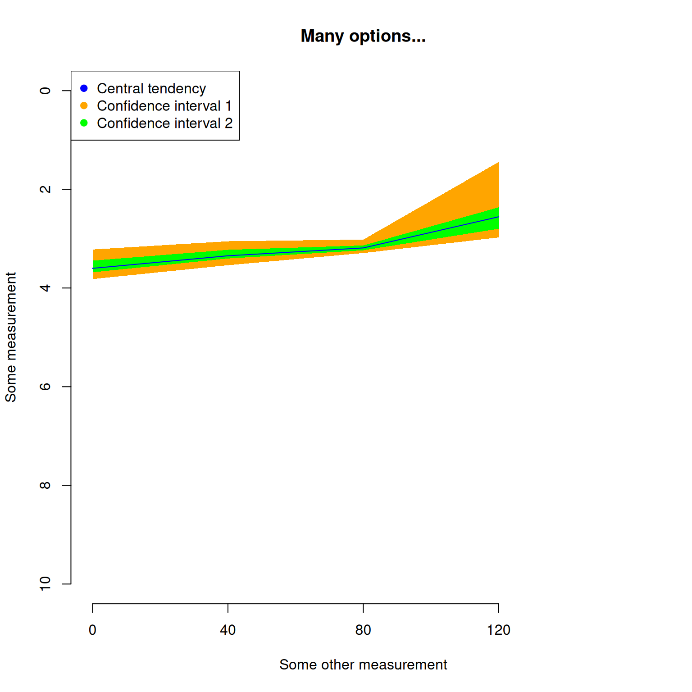

4 Details of specific functions
The following section contains information specific to some functions.
If any of your questions are not covered in these sections, please refer to the function help files in R, send me an email (guillert@tcd.ie), or raise an issue on GitHub.
The several tutorials below describe specific functionalities of certain functions; please always refer to the function help files for the full function documentation!
Before each section, make sure you loaded the Beck and Lee (2014) data (see example data for more details).
## Loading the data
data(BeckLee_mat50)
data(BeckLee_mat99)
data(BeckLee_tree)
data(BeckLee_ages)4.1 Time slicing
The function chrono.subsets allows users to divide the matrix into different time subsets or slices given a dated phylogeny that contains all the elements (i.e. taxa) from the matrix.
Each subset generated by this function will then contain all the elements present at a specific point in time or during a specific period in time.
Two types of time subsets can be performed by using the method option:
- Discrete time subsets (or time-binning) using
method = discrete - Continuous time subsets (or time-slicing) using
method = continuous
For the time-slicing method details see Guillerme and Cooper (2018).
For both methods, the function takes the time argument which can be a vector of numeric values for:
- Defining the boundaries of the time bins (when
method = discrete) - Defining the time slices (when
method = continuous)
Otherwise, the time argument can be set as a single numeric value for automatically generating a given number of equidistant time-bins/slices.
Additionally, it is also possible to input a dataframe containing the first and last occurrence data (FAD/LAD) for taxa that span over a longer time than the given tips/nodes age, so taxa can appear in more than one time bin/slice.
4.1.1 Time-binning
Here is an example for the time binning method (method = discrete):
## Generating three time bins containing the taxa present every 40 Ma
chrono.subsets(data = BeckLee_mat50, tree = BeckLee_tree,
method = "discrete",
time = c(120, 80, 40, 0))## ---- dispRity object ----
## 3 discrete time subsets for 50 elements in one matrix with 1 phylogenetic tree
## 120 - 80, 80 - 40, 40 - 0.Note that we can also generate equivalent results by just telling the function that we want three time-bins as follow:
## Automatically generate three equal length bins:
chrono.subsets(data = BeckLee_mat50, tree = BeckLee_tree,
method = "discrete",
time = 3)## ---- dispRity object ----
## 3 discrete time subsets for 50 elements in one matrix with 1 phylogenetic tree
## 133.51 - 89.01, 89.01 - 44.5, 44.5 - 0.In this example, the taxa were split inside each time-bin according to their age. However, the taxa here are considered as single points in time. It is totally possible that some taxa could have had longer longevity and that they exist in multiple time bins. In this case, it is possible to include them in more than one bin by providing a table of first and last occurrence dates (FAD/LAD). This table should have the taxa names as row names and two columns for respectively the first and last occurrence age:
## Displaying the table of first and last occurrence dates
## for each taxa
head(BeckLee_ages)## FAD LAD
## Adapis 37.2 36.8
## Asioryctes 83.6 72.1
## Leptictis 33.9 33.3
## Miacis 49.0 46.7
## Mimotona 61.6 59.2
## Notharctus 50.2 47.0## Generating time bins including taxa that might span between them
chrono.subsets(data = BeckLee_mat50, tree = BeckLee_tree,
method = "discrete",
time = c(120, 80, 40, 0), FADLAD = BeckLee_ages)## ---- dispRity object ----
## 3 discrete time subsets for 50 elements in one matrix with 1 phylogenetic tree
## 120 - 80, 80 - 40, 40 - 0.When using this method, the oldest boundary of the first bin (or the first slice, see below) is automatically generated as the root age plus 1% of the tree length, as long as at least three elements/taxa are present at that point in time.
The algorithm adds an extra 1% tree length until reaching the required minimum of three elements.
It is also possible to include nodes in each bin by using inc.nodes = TRUE and providing a matrix that contains the ordinated distance among tips and nodes.
If you want to generate time subsets based on stratigraphy, the package proposes a useful functions to do it for you: get.bin.ages (check out the function’s manual in R)!
4.1.2 Time-slicing
For the time-slicing method (method = continuous), the idea is fairly similar.
This option, however, requires a matrix that contains the ordinated distance among taxa and nodes and an extra argument describing the assumed evolutionary model (via the model argument).
This model argument is used when the time slice occurs along a branch of the tree rather than on a tip or a node, meaning that a decision must be made about what the value for the branch should be.
The model can be one of the following:
- Punctuated models
acctranwhere the data chosen along the branch is always the one of the descendantdeltranwhere the data chosen along the branch is always the one of the ancestorrandomwhere the data chosen along the branch is randomly chosen between the descendant or the ancestorproximitywhere the data chosen along the branch is either the descendant or the ancestor depending on branch length
- Gradual models
equal.splitwhere the data chosen along the branch is both the descendant and the ancestor with an even probabilitygradual.splitwhere the data chosen along the branch is both the descendant and the ancestor with a probability depending on branch length
Note that the four first models are a proxy for punctuated evolution: the selected data is always either the one of the descendant or the ancestor. In other words, changes along the branches always occur at either ends of it. The two last models are a proxy for gradual evolution: the data from both the descendant and the ancestor is used with an associate probability. These later models perform better when bootstrapped, effectively approximating the “intermediate” state between and the ancestor and the descendants.
More details about the differences between these methods can be found in Guillerme and Cooper (2018).
## Generating four time slices every 40 million years
## under a model of proximity evolution
chrono.subsets(data = BeckLee_mat99, tree = BeckLee_tree,
method = "continuous", model = "proximity",
time = c(120, 80, 40, 0),
FADLAD = BeckLee_ages)## ---- dispRity object ----
## 4 continuous (proximity) time subsets for 99 elements in one matrix with 1 phylogenetic tree
## 120, 80, 40, 0.## Generating four time slices automatically
chrono.subsets(data = BeckLee_mat99, tree = BeckLee_tree,
method = "continuous", model = "proximity",
time = 4, FADLAD = BeckLee_ages)## ---- dispRity object ----
## 4 continuous (proximity) time subsets for 99 elements in one matrix with 1 phylogenetic tree
## 133.51, 89.01, 44.5, 0.4.2 Customised subsets
Another way of separating elements into different categories is to use customised subsets as briefly explained above. This function simply takes the list of elements to put in each group (whether they are the actual element names or their position in the matrix).
## Creating the two groups (crown and stems)
mammal_groups <- crown.stem(BeckLee_tree, inc.nodes = FALSE)
## Separating the dataset into two different groups
custom.subsets(BeckLee_mat50, group = mammal_groups)## ---- dispRity object ----
## 2 customised subsets for 50 elements in one matrix:
## crown, stem.Like in this example, you can use the utility function crown.stem that allows to automatically separate the crown and stems taxa given a phylogenetic tree.
Also, elements can easily be assigned to different groups if necessary!
## Creating the three groups as a list
weird_groups <- list("even" = seq(from = 1, to = 49, by = 2),
"odd" = seq(from = 2, to = 50, by = 2),
"all" = c(1:50))The custom.subsets function can also take a phylogeny (as a phylo object) as an argument to create groups as clades:
## Creating groups as clades
custom.subsets(BeckLee_mat50, group = BeckLee_tree)This automatically creates 49 (the number of nodes) groups containing between two and 50 (the number of tips) elements.
4.3 Bootstraps and rarefactions
One important step in analysing ordinated matrices is to pseudo-replicate the data to see how robust the results are, and how sensitive they are to outliers in the dataset.
This can be achieved using the function boot.matrix to bootstrap and/or rarefy the data.
The default options will bootstrap the matrix 100 times without rarefaction using the “full” bootstrap method (see below):
## Default bootstrapping
boot.matrix(data = BeckLee_mat50)## ---- dispRity object ----
## 50 elements in one matrix with 48 dimensions.
## Data was bootstrapped 100 times (method:"full").The number of bootstrap replicates can be defined using the bootstraps option.
The method can be modified by controlling which bootstrap algorithm to use through the boot.type argument.
Currently two algorithms are implemented:
"full"where the bootstrapping is entirely stochastic (n elements are replaced by any m elements drawn from the data)"single"where only one random element is replaced by one other random element for each pseudo-replicate"null"where every element is resampled across the whole matrix (not just the subsets). I.e. for each subset of n elements, this algorithm resamples n elements across ALL subsets (not just the current one). If only one subset (or none) is used, this does the same as the"full"algorithm.
## Bootstrapping with the single bootstrap method
boot.matrix(BeckLee_mat50, boot.type = "single")## ---- dispRity object ----
## 50 elements in one matrix with 48 dimensions.
## Data was bootstrapped 100 times (method:"single").This function also allows users to rarefy the data using the rarefaction argument.
Rarefaction allows users to limit the number of elements to be drawn at each bootstrap replication.
This is useful if, for example, one is interested in looking at the effect of reducing the number of elements on the results of an analysis.
This can be achieved by using the rarefaction option that draws only n-x at each bootstrap replicate (where x is the number of elements not sampled).
The default argument is FALSE but it can be set to TRUE to fully rarefy the data (i.e. remove x elements for the number of pseudo-replicates, where x varies from the maximum number of elements present in each subset to a minimum of three elements).
It can also be set to one or more numeric values to only rarefy to the corresponding number of elements.
## Bootstrapping with the full rarefaction
boot.matrix(BeckLee_mat50, bootstraps = 20,
rarefaction = TRUE)## ---- dispRity object ----
## 50 elements in one matrix with 48 dimensions.
## Data was bootstrapped 20 times (method:"full") and fully rarefied.## Or with a set number of rarefaction levels
boot.matrix(BeckLee_mat50, bootstraps = 20,
rarefaction = c(6:8, 3))## ---- dispRity object ----
## 50 elements in one matrix with 48 dimensions.
## Data was bootstrapped 20 times (method:"full") and rarefied to 6, 7, 8, 3 elements.Note that using the
rarefactionargument also bootstraps the data. In these examples, the function bootstraps the data (without rarefaction) AND also bootstraps the data with the different rarefaction levels.
One other argument is dimensions that specifies how many dimensions from the matrix should be used for further analysis.
When missing, all dimensions from the ordinated matrix are used.
## Using the first 50% of the dimensions
boot.matrix(BeckLee_mat50, dimensions = 0.5)## ---- dispRity object ----
## 50 elements in one matrix with 24 dimensions.
## Data was bootstrapped 100 times (method:"full").## Using the first 10 dimensions
boot.matrix(BeckLee_mat50, dimensions = 10)## ---- dispRity object ----
## 50 elements in one matrix with 1 dimensions.
## Data was bootstrapped 100 times (method:"full").It is also possible to specify the sampling probability in the bootstrap for each elements.
This can be useful for weighting analysis for example (i.e. giving more importance to specific elements).
These probabilities can be passed to the prob argument individually with a vector with the elements names or with a matrix with the rownames as elements names.
The elements with no specified probability will be assigned a probability of 1 (or 1/maximum weight if the argument is weights rather than probabilities).
## Attributing a weight of 0 to Cimolestes and 10 to Maelestes
boot.matrix(BeckLee_mat50,
prob = c("Cimolestes" = 0, "Maelestes" = 10))## ---- dispRity object ----
## 50 elements in one matrix with 48 dimensions.
## Data was bootstrapped 100 times (method:"full").Of course, one could directly supply the subsets generated above (using chrono.subsets or custom.subsets) to this function.
## Creating subsets of crown and stem mammals
crown_stem <- custom.subsets(BeckLee_mat50,
group = crown.stem(BeckLee_tree,
inc.nodes = FALSE))
## Bootstrapping and rarefying these groups
boot.matrix(crown_stem, bootstraps = 200, rarefaction = TRUE)## ---- dispRity object ----
## 2 customised subsets for 50 elements in one matrix with 48 dimensions:
## crown, stem.
## Data was bootstrapped 200 times (method:"full") and fully rarefied.## Creating time slice subsets
time_slices <- chrono.subsets(data = BeckLee_mat99,
tree = BeckLee_tree,
method = "continuous",
model = "proximity",
time = c(120, 80, 40, 0),
FADLAD = BeckLee_ages)
## Bootstrapping the time slice subsets
boot.matrix(time_slices, bootstraps = 100)## ---- dispRity object ----
## 4 continuous (proximity) time subsets for 99 elements in one matrix with 97 dimensions with 1 phylogenetic tree
## 120, 80, 40, 0.
## Data was bootstrapped 100 times (method:"full").4.4 Disparity metrics
There are many ways of measuring disparity!
In brief, disparity is a summary metric that will represent an aspect of an ordinated space (e.g. a MDS, PCA, PCO, PCoA).
For example, one can look at ellipsoid hyper-volume of the ordinated space (Donohue et al. 2013), the sum and the product of the ranges and variances (Wills et al. 1994) or the median position of the elements relative to their centroid (Wills et al. 1994).
Of course, there are many more examples of metrics one can use for describing some aspect of the ordinated space, with some performing better than other ones at particular descriptive tasks, and some being more generalist.
Check out this paper on selecting the best metric for your specific question in Ecology and Evolution.
You can also use the moms shiny app to test which metric captures which aspect of traitspace occupancy regarding your specific space and your specific question.
Regardless, and because of this great diversity of metrics, the package dispRity does not have one way to measure disparity but rather proposes to facilitate users in defining their own disparity metric that will best suit their particular analysis.
In fact, the core function of the package, dispRity, allows the user to define any metric with the metric argument.
However the metric argument has to follow certain rules:
- It must be composed from one to three
functionobjects; - The function(s) must take as a first argument a
matrixor avector; - The function(s) must be of one of the three dimension-levels described below;
- At least one of the functions must be of dimension-level 1 or 2 (see below).
4.4.1 The function dimension-levels
The metric function dimension-levels determine the “dimensionality of decomposition” of the input matrix.
In other words, each dimension-level designates the dimensions of the output, i.e. either three (a matrix); two (a vector); or one (a single numeric value) dimension.

Illustration of the different dimension-levels of functions with an input matrix
4.4.1.1 Dimension-level 1 functions
A dimension-level 1 function will decompose a matrix or a vector into a single value:
## Creating a dummy matrix
dummy_matrix <- matrix(rnorm(12), 4, 3)
## Example of dimension-level 1 functions
mean(dummy_matrix)## [1] 0.1012674median(dummy_matrix)## [1] 0.3345108Any summary metric such as mean or median are good examples of dimension-level 1 functions as they reduce the matrix to a single dimension (i.e. one value).
4.4.1.2 Dimension-level 2 functions
A dimension-level 2 function will decompose a matrix into a vector.
## Defining the function as the product of rows
prod.rows <- function(matrix) apply(matrix, 1, prod)
## A dimension-level 2 metric
prod.rows(dummy_matrix)## [1] 0.72217818 2.48612354 -0.08986575 0.58266449Several dimension-level 2 functions are implemented in dispRity (see ?dispRity.metric) such as the variances or ranges functions that calculate the variance or the range of each dimension of the ordinated matrix respectively.
4.4.1.3 Dimension-level 3 functions
Finally a dimension-level 3 function will transform the matrix into another matrix. Note that the dimension of the output matrix doesn’t need to match the the input matrix:
## A dimension-level 3 metric
var(dummy_matrix)## [,1] [,2] [,3]
## [1,] 1.8570383 0.7417569 -0.5131686
## [2,] 0.7417569 1.3194330 -1.5344429
## [3,] -0.5131686 -1.5344429 2.8070556## A dimension-level 3 metric with a forced matrix output
as.matrix(dist(dummy_matrix))## 1 2 3 4
## 1 0.000000 4.794738 3.382990 3.297110
## 2 4.794738 0.000000 2.400321 3.993864
## 3 3.382990 2.400321 0.000000 2.187412
## 4 3.297110 3.993864 2.187412 0.0000004.4.2 Between groups metrics
One specific category of metrics in the dispRity package is the between groups metrics.
As the name suggest, these metrics can be used to calculate the disparity between groups rather than within the groups.
These metrics follow the same classifications as the “normal” (within group) metrics with dimension-level 1, 2 and 3 between groups metrics.
However, at the difference of the “normal” metrics, their input arguments must be matrix and matrix2 (and of course any other additional arguments).
For example, this metric measures the difference in mean between two matrices:
## A simple example
mean.difference <- function(matrix, matrix2) {
mean(matrix) - mean(matrix2)
}You can find the list of implemented between groups metric here or design them yourself for your specific needs (potentially using make.metric for help).
The function works by simply using the two available matrices, with no restriction in terms of dimensions (although you’d probably want both matrices to have the same number of dimensions)
## A second matrix
dummy_matrix2 <- matrix(runif(12), 4, 3)
## The difference between groups
mean.difference(dummy_matrix, dummy_matrix2)## [1] -0.3194556Beyond this super simple example, it might probably be interesting to use this metric on dispRity objects, especially the ones from custom.subsets and chrono.subsets.
In fact, the dispRity function allows to apply the between groups metric directly to the dispRity objects using the between.groups = TRUE option.
For example:
## Combining both matrices
big_matrix <- rbind(dummy_matrix, dummy_matrix2)
rownames(big_matrix) <- 1:8
## Making a dispRity object with both groups
grouped_matrix <- custom.subsets(big_matrix,
group = c(list(1:4), list(1:4)))
## Calculating the mean difference between groups
(mean_differences <- dispRity(grouped_matrix,
metric = mean.difference,
between.groups = TRUE))## ---- dispRity object ----
## 2 customised subsets for 8 elements in one matrix with 3 dimensions:
## 1, 2.
## Disparity was calculated as: mean.difference between groups.## Summarising the object
summary(mean_differences)## subsets n_1 n_2 obs
## 1 1:2 4 4 0## Note how the summary table now indicates
## the number of elements for each groupFor dispRity objects generated by custom.subsets, the dispRity function will by default apply the metric on the groups in a pairwise fashion.
For example, if the object contains multiple groups, all groups will be compared to each other:
## A dispRity object with multiple groups
grouped_matrix <- custom.subsets(big_matrix,
group = c("A" = list(1:4),
"B" = list(1:4),
"C" = list(2:6),
"D" = list(1:8)))
## Measuring disparity between all groups
summary(dispRity(grouped_matrix, metric = mean.difference,
between.groups = TRUE))## subsets n_1 n_2 obs
## 1 A:B 4 4 0.000
## 2 A:C 4 5 -0.172
## 3 A:D 4 8 -0.160
## 4 B:C 4 5 -0.172
## 5 B:D 4 8 -0.160
## 6 C:D 5 8 0.012For dispRity objects generated by chrono.subsets (not shown here), the dispRity function will by default apply the metric on the groups in a serial way (group 1 vs. group 2, group 2 vs. group 3, group 3 vs. group 4, etc…).
However, in both cases (for objects from custom.subsets or chrono.subsets) it is possible to manually specific the list of pairs of comparisons through their ID numbers:
## Measuring disparity between specific groups
summary(dispRity(grouped_matrix, metric = mean.difference,
between.groups = list(c(1,3), c(3,1), c(4,1))))## subsets n_1 n_2 obs
## 1 A:C 4 5 -0.172
## 2 C:A 5 4 0.172
## 3 D:A 8 4 0.160Note that in any case, the order of the comparison can matter.
In our example, it is obvious that mean(matrix) - mean(matrix2) is not the same as mean(matrix2) - mean(matrix).
4.4.3 make.metric
Of course, functions can be more complex and involve multiple operations such as the centroids function (see ?dispRity.metric) that calculates the Euclidean distance between each element and the centroid of the ordinated space.
The make.metric function implemented in dispRity is designed to help test and find the dimension-level of the functions.
This function tests:
- If your function can deal with a
matrixor avectoras an input; - Your function’s dimension-level according to its output (dimension-level 1, 2 or 3, see above);
- Whether the function can be implemented in the
dispRityfunction (the function is fed into alapplyloop).
For example, let’s see if the functions described above are the right dimension-levels:
## Which dimension-level is the mean function?
## And can it be used in dispRity?
make.metric(mean)## mean outputs a single value.
## mean is detected as being a dimension-level 1 function.## Which dimension-level is the prod.rows function?
## And can it be used in dispRity?
make.metric(prod.rows)## prod.rows outputs a matrix object.
## prod.rows is detected as being a dimension-level 2 function.## Which dimension-level is the var function?
## And can it be used in dispRity?
make.metric(var)## var outputs a matrix object.
## var is detected as being a dimension-level 3 function.
## Additional dimension-level 2 and/or 1 function(s) will be needed.A non verbose version of the function is also available.
This can be done using the option silent = TRUE and will simply output the dimension-level of the metric.
## Testing whether mean is dimension-level 1
if(make.metric(mean, silent = TRUE)$type != "level1") {
message("The metric is not dimension-level 1.")
}
## Testing whether var is dimension-level 1
if(make.metric(var, silent = TRUE)$type != "level1") {
message("The metric is not dimension-level 1.")
}## The metric is not dimension-level 1.4.4.4 Metrics in the dispRity function
Using this metric structure, we can easily use any disparity metric in the dispRity function as follows:
## Measuring disparity as the standard deviation
## of all the values of the
## ordinated matrix (dimension-level 1 function).
summary(dispRity(BeckLee_mat50, metric = sd))## subsets n obs
## 1 1 50 0.227## Measuring disparity as the standard deviation
## of the variance of each axis of
## the ordinated matrix (dimension-level 1 and 2 functions).
summary(dispRity(BeckLee_mat50, metric = c(sd, variances)))## subsets n obs
## 1 1 50 0.032## Measuring disparity as the standard deviation
## of the variance of each axis of
## the variance covariance matrix (dimension-level 1, 2 and 3 functions).
summary(dispRity(BeckLee_mat50, metric = c(sd, variances, var)), round = 10)## subsets n obs
## 1 1 50 0Note that the order of each function in the metric argument does not matter, the dispRity function will automatically detect the function dimension-levels (using make.metric) and apply them to the data in decreasing order (dimension-level 3 > 2 > 1).
## Disparity as the standard deviation of the variance of each axis of the
## variance covariance matrix:
disparity1 <- summary(dispRity(BeckLee_mat50,
metric = c(sd, variances, var)),
round = 10)
## Same as above but using a different function order for the metric argument
disparity2 <- summary(dispRity(BeckLee_mat50,
metric = c(variances, sd, var)),
round = 10)
## Both ways output the same disparity values:
disparity1 == disparity2## subsets n obs
## [1,] TRUE TRUE TRUEIn these examples, we considered disparity to be a single value.
For example, in the previous example, we defined disparity as the standard deviation of the variances of each column of the variance/covariance matrix (metric = c(variances, sd, var)).
It is, however, possible to calculate disparity as a distribution.
4.4.5 Metrics implemented in dispRity
Several disparity metrics are implemented in the dispRity package.
The detailed list can be found in ?dispRity.metric along with some description of each metric.
| Level | Name | Description | Source |
|---|---|---|---|
| 2 | ancestral.dist |
The distance between an element and its ancestor | dispRity |
| 2 | angles |
The angle of main variation of each dimensions | dispRity |
| 2 | centroids1 |
The distance between each element and the centroid of the ordinated space | dispRity |
| 1 | convhull.surface |
The surface of the convex hull formed by all the elements | geometry::convhulln$area |
| 1 | convhull.volume |
The volume of the convex hull formed by all the elements | geometry::convhulln$vol |
| 2 | deviations |
The minimal distance between each element and a hyperplane | dispRity |
| 1 | diagonal |
The longest distance in the ordinated space (like the diagonal in two dimensions) | dispRity |
| 1 | disalignment |
The rejection of the centroid of a matrix from the major axis of another (typically an "as.covar" metric) |
dispRity |
| 2 | displacements |
The ratio between the distance from a reference and the distance from the centroid | dispRity |
| 1 | edge.length.tree |
The edge lengths of the elements on a tree | ape |
| 1 | ellipsoid.volume1 |
The volume of the ellipsoid of the space | Donohue et al. (2013) |
| 1 | func.div |
The functional divergence (the ratio of deviation from the centroid) | dispRity (similar to FD::dbFD$FDiv but without abundance) |
| 1 | func.eve |
The functional evenness (the minimal spanning tree distances evenness) | dispRity (similar to FD::dbFD$FEve but without abundance) |
| 1 | group.dist |
The distance between two groups | dispRity |
| 1 | mode.val |
The modal value | dispRity |
| 1 | n.ball.volume |
The hyper-spherical (n-ball) volume | dispRity |
| 2 | neighbours |
The distance to specific neighbours (e.g. the nearest neighbours - by default) | dispRity |
| 2 | pairwise.dist |
The pairwise distances between elements | vegan::vegist |
| 2 | point.dist |
The distance between one group and the point of another group | dispRity |
| 2 | projections |
The distance on (projection) or from (rejection) an arbitrary vector | dispRity |
| 1 | projections.between |
projections metric applied between groups |
dispRity |
| 2 | projections.tree |
The projections metric but where the vector can be based on a tree |
dispRity |
| 2 | quantiles |
The nth quantile range per axis | dispRity |
| 2 | radius |
The radius of each dimensions | dispRity |
| 2 | ranges |
The range of each dimension | dispRity |
| 1 | roundness |
The integral of the ranked scaled eigenvalues of a variance-covariance matrix | dispRity |
| 2 | span.tree.length |
The minimal spanning tree length | vegan::spantree |
| 2 | variances |
The variance of each dimension | dispRity |
1: Note that by default, the centroid is the centroid of the elements.
It can, however, be fixed to a different value by using the centroid argument centroids(space, centroid = rep(0, ncol(space))), for example the origin of the ordinated space.
2: This function uses an estimation of the eigenvalue that only works for MDS or PCoA ordinations (not PCA).
You can find more informations on the vast variety of metrics that you can use in your analysis in this paper.
4.4.6 Equations and implementations
Some of the functions described below are implemented in the dispRity package and do not require any other packages to calculate (see implementation here).
\[\begin{equation} ancestral.dist = \sqrt{\sum_{i=1}^{n}{({d}_{n}-Ancestor_{n})^2}} \end{equation}\]
\[\begin{equation} centroids = \sqrt{\sum_{i=1}^{n}{({d}_{n}-Centroid_{d})^2}} \end{equation}\]
\[\begin{equation} diagonal = \sqrt{\sum_{i=1}^{d}|max(d_i) - min(k_i)|} \end{equation}\]
\[\begin{equation} deviations = \frac{|Ax + By + ... + Nm + Intercept|}{\sqrt{A^2 + B^2 + ... + N^2}} \end{equation}\]
\[\begin{equation} displacements = \frac{\sqrt{\sum_{i=1}^{n}{({d}_{n}-Reference_{d})^2}}}{\sqrt{\sum_{i=1}^{n}{({d}_{n}-Centroid_{k})^2}}} \end{equation}\]
\[\begin{equation} ellipsoid.volume = \frac{\pi^{d/2}}{\Gamma(\frac{d}{2}+1)}\displaystyle\prod_{i=1}^{d} (\lambda_{i}^{0.5}) \end{equation}\]
\[\begin{equation} n.ball.volume = \frac{\pi^{d/2}}{\Gamma(\frac{d}{2}+1)}\displaystyle\prod_{i=1}^{d} R \end{equation}\]
\[\begin{equation} projection_{on} = \| \overrightarrow{i} \cdot \overrightarrow{b} \| \end{equation}\] \[\begin{equation} projection_{from} = \| \overrightarrow{i} - \overrightarrow{i} \cdot \overrightarrow{b} \| \end{equation}\]
\[\begin{equation} radius = |\frac{\sum_{i=1}^{n}d_i}{n} - f(\mathbf{v}d)| \end{equation}\]
\[\begin{equation} ranges = |max(d_i) - min(d_i)| \end{equation}\]
\[\begin{equation} roundness = \int_{i = 1}^{n}{\frac{\lambda_{i}}{\text{max}(\lambda)}} \end{equation}\]
\[\begin{equation} variances = \sigma^{2}{d_i} \end{equation}\]
\[\begin{equation} span.tree.length = \mathrm{branch\ length} \end{equation}\]
Where d is the number of dimensions,
n the number of elements,
\(\Gamma\) is the Gamma distribution,
\(\lambda_i\) is the eigenvalue of each dimensions,
\(\sigma^{2}\) is their variance and
\(Centroid_{k}\) is their mean,
\(Ancestor_{n}\) is the coordinates of the ancestor of element \(n\),
\(f(\mathbf{v}k)\) is function to select one value from the vector \(\mathbf{v}\) of the dimension \(k\) (e.g. it’s maximum, minimum, mean, etc.),
R is the radius of the sphere or the product of the radii of each dimensions (\(\displaystyle\prod_{i=1}^{k}R_{i}\) - for a hyper-ellipsoid),
\(Reference_{k}\) is an arbitrary point’s coordinates (usually 0),
\(\overrightarrow{b}\) is the vector defined by ((point1, point2)),
and \(\overrightarrow{i}\) is the vector defined by ((point1, i) where i is any row of the matrix).
4.4.7 Using the different disparity metrics
Here is a brief demonstration of the main metrics implemented in dispRity.
First, we will create a dummy/simulated ordinated space using the space.maker utility function (more about that here:
## Creating a 10*5 normal space
set.seed(1)
dummy_space <- space.maker(10, 5, rnorm)
rownames(dummy_space) <- 1:10We will use this simulated space to demonstrate the different metrics.
4.4.7.1 Volumes and surface metrics
The functions ellipsoid.volume, convhull.surface, convhull.volume and n.ball.volume all measure the surface or the volume of the ordinated space occupied:
Because there is only one subset (i.e. one matrix) in the dispRity object, the operations below are the equivalent of metric(dummy_space) (with rounding).
## Calculating the ellipsoid volume
summary(dispRity(dummy_space, metric = ellipsoid.volume))## subsets n obs
## 1 1 10 1.061WARNING: in such dummy space, this gives the estimation of the ellipsoid volume, not the real ellipsoid volume! See the cautionary note in
?ellipsoid.volume.
## Calculating the convex hull surface
summary(dispRity(dummy_space, metric = convhull.surface))## subsets n obs
## 1 1 10 11.91## Calculating the convex hull volume
summary(dispRity(dummy_space, metric = convhull.volume))## subsets n obs
## 1 1 10 1.031## Calculating the convex hull volume
summary(dispRity(dummy_space, metric = n.ball.volume))## subsets n obs
## 1 1 10 4.43The convex hull based functions are a call to the geometry::convhulln function with the "FA" option (computes total area and volume).
Also note that they are really sensitive to the size of the dataset.
Cautionary note: measuring volumes in a high number of dimensions can be strongly affected by the curse of dimensionality that often results in near 0 disparity values. I strongly recommend reading this really intuitive explanation from Toph Tucker.
4.4.7.2 Ranges, variances, quantiles, radius, pairwise distance, neighbours, modal value and diagonal
The functions ranges, variances radius, pairwise.dist, mode.val and diagonal all measure properties of the ordinated space based on its dimensional properties (they are also less affected by the “curse of dimensionality”):
ranges, variances quantiles and radius work on the same principle and measure the range/variance/radius of each dimension:
## Calculating the ranges of each dimension in the ordinated space
ranges(dummy_space)## [1] 2.430909 3.726481 2.908329 2.735739 1.588603## Calculating disparity as the distribution of these ranges
summary(dispRity(dummy_space, metric = ranges))## subsets n obs.median 2.5% 25% 75% 97.5%
## 1 1 10 2.736 1.673 2.431 2.908 3.645## Calculating disparity as the sum and the product of these ranges
summary(dispRity(dummy_space, metric = c(sum, ranges)))## subsets n obs
## 1 1 10 13.39summary(dispRity(dummy_space, metric = c(prod, ranges)))## subsets n obs
## 1 1 10 114.5## Calculating the variances of each dimension in the
## ordinated space
variances(dummy_space)## [1] 0.6093144 1.1438620 0.9131859 0.6537768 0.3549372## Calculating disparity as the distribution of these variances
summary(dispRity(dummy_space, metric = variances))## subsets n obs.median 2.5% 25% 75% 97.5%
## 1 1 10 0.654 0.38 0.609 0.913 1.121## Calculating disparity as the sum and
## the product of these variances
summary(dispRity(dummy_space, metric = c(sum, variances)))## subsets n obs
## 1 1 10 3.675summary(dispRity(dummy_space, metric = c(prod, variances)))## subsets n obs
## 1 1 10 0.148## Calculating the quantiles of each dimension
## in the ordinated space
quantiles(dummy_space)## [1] 2.234683 3.280911 2.760855 2.461077 1.559057## Calculating disparity as the distribution of these variances
summary(dispRity(dummy_space, metric = quantiles))## subsets n obs.median 2.5% 25% 75% 97.5%
## 1 1 10 2.461 1.627 2.235 2.761 3.229## By default, the quantile calculated is the 95%
## (i.e. 95% of the data on each axis)
## this can be changed using the option quantile:
summary(dispRity(dummy_space, metric = quantiles, quantile = 50))## subsets n obs.median 2.5% 25% 75% 97.5%
## 1 1 10 0.967 0.899 0.951 0.991 1.089## Calculating the radius of each dimension in the ordinated space
radius(dummy_space)## [1] 1.4630780 2.4635449 1.8556785 1.4977898 0.8416318## By default the radius is the maximum distance from the centre of
## the dimension. It can however be changed to any function:
radius(dummy_space, type = min)## [1] 0.05144054 0.14099827 0.02212226 0.17453525 0.23044528radius(dummy_space, type = mean)## [1] 0.6233501 0.7784888 0.7118713 0.6253263 0.5194332## Calculating disparity as the mean average radius
summary(dispRity(dummy_space,
metric = c(mean, radius),
type = mean))## subsets n obs
## 1 1 10 0.652The pairwise distances and the neighbours distances uses the function vegan::vegdist and can take the normal vegdist options:
## The average pairwise euclidean distance
summary(dispRity(dummy_space, metric = c(mean, pairwise.dist)))## subsets n obs
## 1 1 10 2.539## The distribution of the Manhattan distances
summary(dispRity(dummy_space, metric = pairwise.dist,
method = "manhattan"))## subsets n obs.median 2.5% 25% 75% 97.5%
## 1 1 10 4.427 2.566 3.335 5.672 9.63## The average nearest neighbour distances
summary(dispRity(dummy_space, metric = neighbours))## subsets n obs.median 2.5% 25% 75% 97.5%
## 1 1 10 1.517 1.266 1.432 1.646 2.787## The average furthest neighbour manhattan distances
summary(dispRity(dummy_space, metric = neighbours,
which = max, method = "manhattan"))## subsets n obs.median 2.5% 25% 75% 97.5%
## 1 1 10 7.895 6.15 6.852 9.402 10.99Note that this function is a direct call to vegan::vegdist(matrix, method = method, diag = FALSE, upper = FALSE, ...).
The diagonal function measures the multidimensional diagonal of the whole space (i.e. in our case the longest Euclidean distance in our five dimensional space).
The mode.val function measures the modal value of the matrix:
## Calculating the ordinated space's diagonal
summary(dispRity(dummy_space, metric = diagonal))## subsets n obs
## 1 1 10 3.659## Calculating the modal value of the matrix
summary(dispRity(dummy_space, metric = mode.val))## subsets n obs
## 1 1 10 -2.21This metric is only a Euclidean diagonal (mathematically valid) if the dimensions within the space are all orthogonal!
4.4.7.3 Centroids, displacements and ancestral distances metrics
The centroids metric allows users to measure the position of the different elements compared to a fixed point in the ordinated space.
By default, this function measures the distance between each element and their centroid (centre point):
## The distribution of the distances between each element and their centroid
summary(dispRity(dummy_space, metric = centroids))## subsets n obs.median 2.5% 25% 75% 97.5%
## 1 1 10 1.435 0.788 1.267 1.993 3.167## Disparity as the median value of these distances
summary(dispRity(dummy_space, metric = c(median, centroids)))## subsets n obs
## 1 1 10 1.435It is however possible to fix the coordinates of the centroid to a specific point in the ordinated space, as long as it has the correct number of dimensions:
## The distance between each element and the origin
## of the ordinated space
summary(dispRity(dummy_space, metric = centroids, centroid = 0))## subsets n obs.median 2.5% 25% 75% 97.5%
## 1 1 10 1.487 0.785 1.2 2.044 3.176## Disparity as the distance between each element
## and a specific point in space
summary(dispRity(dummy_space, metric = centroids,
centroid = c(0,1,2,3,4)))## subsets n obs.median 2.5% 25% 75% 97.5%
## 1 1 10 5.489 4.293 5.032 6.155 6.957If you have subsets in your dispRity object, you can also use the matrix.dispRity (see utilities) and colMeans to get the centre of a specific subgroup.
For example
## Create a custom subsets object
dummy_groups <- custom.subsets(dummy_space,
group = list("group1" = 1:5,
"group2" = 6:10))
summary(dispRity(dummy_groups, metric = centroids,
centroid = colMeans(get.matrix(dummy_groups, "group1"))))## subsets n obs.median 2.5% 25% 75% 97.5%
## 1 group1 5 2.011 0.902 1.389 2.284 3.320
## 2 group2 5 1.362 0.760 1.296 1.505 1.985The displacements distance is the ratio between the centroids distance and the centroids distance with centroid = 0.
Note that it is possible to measure a ratio from another point than 0 using the reference argument.
It gives indication of the relative displacement of elements in the multidimensional space: a score >1 signifies a displacement away from the reference. A score of >1 signifies a displacement towards the reference.
## The relative displacement of the group in space to the centre
summary(dispRity(dummy_space, metric = displacements))## subsets n obs.median 2.5% 25% 75% 97.5%
## 1 1 10 1.014 0.841 0.925 1.1 1.205## The relative displacement of the group to an arbitrary point
summary(dispRity(dummy_space, metric = displacements,
reference = c(0,1,2,3,4)))## subsets n obs.median 2.5% 25% 75% 97.5%
## 1 1 10 3.368 2.066 3.19 4.358 7.166The ancestral.dist metric works on a similar principle as the centroids function but changes the centroid to be the coordinates of each element’s ancestor (if to.root = FALSE; default) or to the root of the tree (to.root = TRUE).
Therefore this function needs a matrix that contains tips and nodes and a tree as additional argument.
## A generating a random tree with node labels
my_tree <- makeNodeLabel(rtree(5), prefix = "n")
## Adding the tip and node names to the matrix
dummy_space2 <- dummy_space[-1,]
rownames(dummy_space2) <- c(my_tree$tip.label,
my_tree$node.label)
## Calculating the distances from the ancestral nodes
ancestral_dist <- dispRity(dummy_space2, metric = ancestral.dist,
tree = my_tree)
## The ancestral distances distributions
summary(ancestral_dist)## subsets n obs.median 2.5% 25% 75% 97.5%
## 1 1 9 1.729 0.286 1.653 1.843 3.981## Calculating disparity as the sum of the distances from all the ancestral nodes
summary(dispRity(ancestral_dist, metric = sum))## subsets n obs
## 1 1 9 17.284.4.7.4 Minimal spanning tree length
The span.tree.length uses the vegan::spantree function to heuristically calculate the minimum spanning tree (the shortest multidimensional tree connecting each elements) and calculates its length as the sum of every branch lengths.
## The length of the minimal spanning tree
summary(dispRity(dummy_space, metric = c(sum, span.tree.length)))## subsets n obs
## 1 1 10 15.4Note that because the solution is heuristic, this metric can take a long time to compute for big matrices.
4.4.7.5 Functional divergence and evenness
The func.div and func.eve functions are based on the FD::dpFD package.
They are the equivalent to FD::dpFD(matrix)$FDiv and FD::dpFD(matrix)$FEve but a bit faster (since they don’t deal with abundance data).
They are pretty straightforward to use:
## The ratio of deviation from the centroid
summary(dispRity(dummy_space, metric = func.div))## subsets n obs
## 1 1 10 0.747## The minimal spanning tree distances evenness
summary(dispRity(dummy_space, metric = func.eve))## subsets n obs
## 1 1 10 0.898## The minimal spanning tree manhanttan distances evenness
summary(dispRity(dummy_space, metric = func.eve,
method = "manhattan"))## subsets n obs
## 1 1 10 0.9134.4.7.6 Orientation: angles and deviations
The angles performs a least square regression (via the lm function) and returns slope of the main axis of variation for each dimension. This slope can be converted into different units, "slope", "degree" (the default) and "radian". This can be changed through the unit argument.
By default, the angle is measured from the slope 0 (the horizontal line in a 2D plot) but this can be changed through the base argument (using the defined unit):
## The distribution of each angles in degrees for each
## main axis in the matrix
summary(dispRity(dummy_space, metric = angles))## subsets n obs.median 2.5% 25% 75% 97.5%
## 1 1 10 21.26 -39.8 3.723 39.47 56## The distribution of slopes deviating from the 1:1 slope:
summary(dispRity(dummy_space, metric = angles, unit = "slope",
base = 1))## subsets n obs.median 2.5% 25% 75% 97.5%
## 1 1 10 1.389 0.118 1.065 1.823 2.514The deviations function is based on a similar algorithm as above but measures the deviation from the main axis (or hyperplane) of variation.
In other words, it finds the least square line (for a 2D dataset), plane (for a 3D dataset) or hyperplane (for a >3D dataset) and measures the shortest distances between every points and the line/plane/hyperplane.
By default, the hyperplane is fitted using the least square algorithm from stats::glm:
## The distribution of the deviation of each point
## from the least square hyperplane
summary(dispRity(dummy_space, metric = deviations))## subsets n obs.median 2.5% 25% 75% 97.5%
## 1 1 10 0.274 0.02 0.236 0.453 0.776It is also possible to specify the hyperplane equation through the hyperplane equation. The equation must contain the intercept first and then all the slopes and is interpreted as \(intercept + Ax + By + ... + Nd = 0\). For example, a 2 line defined as beta + intercept (e.g. \(y = 2x + 1\)) should be defined as hyperplane = c(1, 2, 1) (\(2x - y + 1 = 0\)).
## The distribution of the deviation of each point
## from a slope (with only the two first dimensions)
summary(dispRity(dummy_space[, c(1:2)], metric = deviations,
hyperplane = c(1, 2, -1)))## subsets n obs.median 2.5% 25% 75% 97.5%
## 1 1 10 0.516 0.038 0.246 0.763 2.42Since both the functions angles and deviations effectively run a lm or glm to estimate slopes or hyperplanes, it is possible to use the option significant = TRUE to only consider slopes or intercepts that have a slope significantly different than zero using an aov with a significant threshold of \(p = 0.05\).
Note that depending on your dataset, using and aov could be completely inappropriate!
In doubt, it’s probably better to enter your base (for angles) or your hyperplane (for deviations) manually so you’re sure you know what the function is measuring.
4.4.7.7 Projections and phylo projections: elaboration and exploration
The projections metric calculates the geometric projection and corresponding rejection of all the rows in a matrix on an arbitrary vector (respectively the distance on and the distance from that vector). The function is based on Aguilera and Pérez-Aguila (2004)’s n-dimensional rotation algorithm to use linear algebra in mutidimensional spaces. The projection or rejection can be seen as respectively the elaboration and exploration scores on a trajectory (sensu Endler et al. (2005)).
By default, the vector (e.g. a trajectory, an axis), on which the data is projected is the one going from the centre of the space (coordinates 0,0, …) and the centroid of the matrix.
However, we advice you do define this axis to something more meaningful using the point1 and point2 options, to create the vector (the vector’s norm will be dist(point1, point2) and its direction will be from point1 towards point2).
## The elaboration on the axis defined by the first and
## second row in the dummy_space
summary(dispRity(dummy_space, metric = projections,
point1 = dummy_space[1,],
point2 = dummy_space[2,]))## subsets n obs.median 2.5% 25% 75% 97.5%
## 1 1 10 0.998 0.118 0.651 1.238 1.885## The exploration on the same axis
summary(dispRity(dummy_space, metric = projections,
point1 = dummy_space[1,],
point2 = dummy_space[2,],
measure = "distance"))## subsets n obs.median 2.5% 25% 75% 97.5%
## 1 1 10 0.719 0 0.568 0.912 1.65By default, the vector (point1, point2) is used as unit vector of the projections (i.e. the Euclidean distance between (point1, point2) is set to 1) meaning that a projection value ("distance" or "position") of X means X times the distance between point1 and point2.
If you want use the unit vector of the input matrix or are using a space where Euclidean distances are non-sensical, you can remove this option using scale = FALSE:
## The elaboration on the same axis using the dummy_space's
## unit vector
summary(dispRity(dummy_space, metric = projections,
point1 = dummy_space[1,],
point2 = dummy_space[2,],
scale = FALSE))## subsets n obs.median 2.5% 25% 75% 97.5%
## 1 1 10 4.068 0.481 2.655 5.05 7.685The projections.tree is the same as the projections metric but allows to determine the vector ((point1, point2)) using a tree rather than manually entering these points.
The function intakes the exact same options as the projections function described above at the exception of point1 and point2.
Instead it takes a the argument type that designates the type of vector to draw from the data based on a phylogenetic tree phy.
The argument type can be a pair of any of the following inputs:
"root": to automatically use the coordinates of the root of the tree (the first element inphy$node.label);"ancestor": to automatically use the coordinates of the elements’ (i.e. any row in the matrix) most recent ancestor;"tips": to automatically use the coordinates from the centroid of all tips;"nodes": to automatically use the coordinates from the centroid of all nodes;"livings": to automatically use the coordinates from the centroid of all “living” tips (i.e. the tips that are the furthest away from the root);"fossils": to automatically use the coordinates from the centroid of all “fossil” tips and nodes (i.e. not the “living” ones);- any numeric values that can be interpreted as
point1andpoint2inprojections(e.g.0,c(0, 1.2, 3/4), etc.); - or a user defined function that with the inputs
matrixandphyandrow(the element’s ID, i.e. the row number inmatrix).
For example, if you want to measure the projection of each element in the matrix (tips and nodes) on the axis from the root of the tree to each element’s most recent ancestor, you can define the vector as type = c("root", "ancestor").
## Adding a extra row to dummy matrix (to match dummy_tree)
tree_space <- rbind(dummy_space, root = rnorm(5))
## Creating a random dummy tree (with labels matching the ones from tree_space)
dummy_tree <- rtree(6)
dummy_tree$tip.label <- rownames(tree_space)[1:6]
dummy_tree$node.label <- rownames(tree_space)[rev(7:11)]
## Measuring the disparity as the projection of each element
## on its root-ancestor vector
summary(dispRity(tree_space, metric = projections.tree,
tree = dummy_tree,
type = c("root", "ancestor")))## Warning in max(nchar(round(column)), na.rm = TRUE): no non-missing arguments to
## max; returning -Inf
## Warning in max(nchar(round(column)), na.rm = TRUE): no non-missing arguments to
## max; returning -Inf## subsets n obs.median 2.5% 25% 75% 97.5%
## 1 1 11 NA 0.229 0.416 0.712 1.016Of course you can also use any other options from the projections function:
## A user defined function that's returns the centroid of
## the first three nodes
fun.root <- function(matrix, tree, row = NULL) {
return(colMeans(matrix[tree$node.label[1:3], ]))
}
## Measuring the unscaled rejection from the vector from the
## centroid of the three first nodes
## to the coordinates of the first tip
summary(dispRity(tree_space, metric = projections.tree,
tree = dummy_tree,
measure = "distance",
type = list(fun.root,
tree_space[1, ])))## subsets n obs.median 2.5% 25% 75% 97.5%
## 1 1 11 0.606 0.064 0.462 0.733 0.9994.4.7.8 Roundness
The roundness coefficient (or metric) ranges between 0 and 1 and expresses the distribution of and ellipse’ major axis ranging from 1, a totally round ellipse (i.e. a circle) to 0 a totally flat ellipse (i.e. a line). A value of \(0.5\) represents a regular ellipse where each major axis is half the size of the previous major axis. A value \(> 0.5\) describes a pancake where the major axis distribution is convex (values close to 1 can be pictured in 3D as a cr`{e}pes with the first two axis being rather big - a circle - and the third axis being particularly thin; values closer to \(0.5\) can be pictured as flying saucers). Conversely, a value \(< 0.5\) describes a cigar where the major axis distribution is concave (values close to 0 can be pictured in 3D as a spaghetti with the first axis rather big and the two next ones being small; values closer to \(0.5\) can be pictured in 3D as a fat cigar).
This is what it looks for example for three simulated variance-covariance matrices in 3D:

4.4.7.9 Between group metrics
You can find detailed explanation on how between group metrics work here.
4.4.7.9.1 group.dist
The group.dist metric allows to measure the distance between two groups in the multidimensional space.
This function needs to intake several groups and use the option between.groups = TRUE in the dispRity function.
It calculates the vector normal distance (euclidean) between two groups and returns 0 if that distance is negative.
Note that it is possible to set up which quantiles to consider for calculating the distances between groups.
For example, one might be interested in only considering the 95% CI for each group.
This can be done through the option probs = c(0.025, 0.975) that is passed to the quantile function.
It is also possible to use this function to measure the distance between the groups centroids by calculating the 50% quantile (probs = c(0.5)).
## Creating a dispRity object with two groups
grouped_space <- custom.subsets(dummy_space,
group = list(c(1:5), c(6:10)))
## Measuring the minimum distance between both groups
summary(dispRity(grouped_space, metric = group.dist,
between.groups = TRUE))## subsets n_1 n_2 obs
## 1 1:2 5 5 0## Measuring the centroid distance between both groups
summary(dispRity(grouped_space, metric = group.dist,
between.groups = TRUE, probs = 0.5))## subsets n_1 n_2 obs
## 1 1:2 5 5 0.708## Measuring the distance between both group's 75% CI
summary(dispRity(grouped_space, metric = group.dist,
between.groups = TRUE, probs = c(0.25, 0.75)))## subsets n_1 n_2 obs
## 1 1:2 5 5 0.0594.4.7.9.2 point.dist
The metric measures the distance between the elements in one group (matrix) and a point calculated from a second group (matrix2).
By default this point is the centroid but can be any point defined by a function passed to the point argument.
For example, the centroid of matrix2 is the mean of each column of that matrix so point = colMeans (default).
This function also takes the method argument like previous one described above to measure either the "euclidean" (default) or the "manhattan" distances:
## Measuring the distance between the elements of the first group
## and the centroid of the second group
summary(dispRity(grouped_space, metric = point.dist,
between.groups = TRUE))## subsets n_1 n_2 obs.median 2.5% 25% 75% 97.5%
## 1 1:2 5 5 2.182 1.304 1.592 2.191 3.355## Measuring the distance between the elements of the second group
## and the centroid of the first group
summary(dispRity(grouped_space, metric = point.dist,
between.groups = list(c(2,1))))## subsets n_1 n_2 obs.median 2.5% 25% 75% 97.5%
## 1 2:1 5 5 1.362 0.76 1.296 1.505 1.985## Measuring the distance between the elements of the first group
## a point defined as the standard deviation of each column
## in the second group
sd.point <- function(matrix2) {apply(matrix2, 2, sd)}
summary(dispRity(grouped_space, metric = point.dist,
point = sd.point, method = "manhattan",
between.groups = TRUE))## subsets n_1 n_2 obs.median 2.5% 25% 75% 97.5%
## 1 1:2 5 5 4.043 2.467 3.567 4.501 6.8844.4.7.9.3 projections.between and disalignment
These two metrics are typically based on variance-covariance matrices from a dispRity object that has a $covar component (see more about that here).
Both are based on the projections metric and can take the same optional arguments (more info here).
The examples and explanations below are based on the default arguments but it is possible (and easy!) to change them.
We are going to use the charadriiformes example for both metrics (see more about that here).
## Loading the charadriiformes data
data(charadriiformes)
## Creating the dispRity object (see the #covar section in the manual for more info)
my_covar <- MCMCglmm.subsets(n = 50,
data = charadriiformes$data,
posteriors = charadriiformes$posteriors,
group = MCMCglmm.levels(charadriiformes$posteriors)[1:4],
tree = charadriiformes$tree,
rename.groups = c(levels(charadriiformes$data$clade), "phylogeny"))The first metric, projections.between projects the major axis of one group (matrix) onto the major axis of another one (matrix2).
For example we might want to know how some groups compare in terms of angle (orientation) to a base group:
## Creating the list of groups to compare
comparisons_list <- list(c("gulls", "phylogeny"),
c("plovers", "phylogeny"),
c("sandpipers", "phylogeny"))
## Measuring the angles between each groups
## (note that we set the metric as.covar, more on that in the #covar section below)
groups_angles <- dispRity(data = my_covar,
metric = as.covar(projections.between),
between.groups = comparisons_list,
measure = "degree")
## And here are the angles in degrees:
summary(groups_angles)## subsets n_1 n_2 obs.median 2.5% 25% 75% 97.5%
## 1 gulls:phylogeny 159 359 8.25 2.101 6.25 14.98 41.8
## 2 plovers:phylogeny 98 359 33.75 5.700 16.33 75.50 131.5
## 3 sandpipers:phylogeny 102 359 10.79 3.876 8.10 16.59 95.9The second metric, disalignment rejects the centroid of a group (matrix) onto the major axis of another one (matrix2).
This allows to measure wether the center of a group is aligned with the major axis of another.
A disalignement value of 0 means that the groups are aligned. A higher disalignment value means the groups are more and more disaligned.
We can use the same set of comparisons as in the projections.between examples to measure which group is most aligned (less disaligned) with the phylogenetic major axis:
## Measuring the disalignement of each group
groups_alignement <- dispRity(data = my_covar,
metric = as.covar(disalignment),
between.groups = comparisons_list)
## And here are the groups alignment (0 = aligned)
summary(groups_alignement)## subsets n_1 n_2 obs.median 2.5% 25% 75% 97.5%
## 1 gulls:phylogeny 159 359 0.003 0.001 0.002 0.005 0.015
## 2 plovers:phylogeny 98 359 0.001 0.000 0.001 0.001 0.006
## 3 sandpipers:phylogeny 102 359 0.002 0.000 0.001 0.003 0.0094.4.8 Which disparity metric to choose?
The disparity metric that gives the most consistent results is the following one:
best.metric <- function() return(42)Joke aside, this is a legitimate question that has no simple answer: it depends on the dataset and question at hand. Thoughts on which metric to choose can be find in Thomas Guillerme, Puttick, et al. (2020) and Thomas Guillerme, Cooper, et al. (2020) but again, will ultimately depend on the question and dataset. The question should help figuring out which type of metric is desired: for example, in the question “does the extinction released niches for mammals to evolve”, the metric in interest should probably pick up a change in size in the trait space (the release could result in some expansion of the mammalian morphospace); or if the question is “does group X compete with group Y”, maybe the metric of interested should pick up changes in position (group X can be displaced by group Y).
In order to visualise what signal different disparity metrics are picking, you can use the moms that come with a detailed manual on how to use it.
Alternatively, you can use the test.metric function:
4.4.8.1 test.metric
This function allows to test whether a metric picks different changes in disparity. It intakes the space on which to test the metric, the disparity metric and the type of changes to apply gradually to the space.
Basically this is a type of biased data rarefaction (or non-biased for "random") to see how the metric reacts to specific changes in trait space.
## Creating a 2D uniform space
example_space <- space.maker(300, 2, runif)
## Testing the product of ranges metric on the example space
example_test <- test.metric(example_space, metric = c(prod, ranges),
shifts = c("random", "size")) By default, the test runs three replicates of space reduction as described in Thomas Guillerme, Puttick, et al. (2020) by gradually removing 10% of the data points following the different algorithms from Thomas Guillerme, Puttick, et al. (2020) (here the "random" reduction and the "size") reduction, resulting in a dispRity object that can be summarised or plotted.
The number of replicates can be changed using the replicates option.
Still by default, the function then runs a linear model on the simulated data to measure some potential trend in the changes in disparity.
The model can be changed using the model option.
Finally, the function runs 10 reductions by default from keeping 10% of the data (removing 90%) and way up to keeping 100% of the data (removing 0%).
This can be changed using the steps option.
A good disparity metric for your dataset will typically have no trend in the "random" reduction (the metric is ideally not affected by sample size) but should have a trend for the reduction of interest.
## The results as a dispRity object
example_test## Metric testing:
## The following metric was tested: c(prod, ranges).
## The test was run on the random, size shifts for 3 replicates using the following model:
## lm(disparity ~ reduction, data = data)
## Use summary(x) or plot(x) for more details.## Summarising these results
summary(example_test)## 10% 20% 30% 40% 50% 60% 70% 80% 90% 100% slope
## random 0.84 0.88 0.94 0.95 0.96 0.98 0.97 0.98 0.96 0.98 1.450100e-03
## size.increase 0.10 0.21 0.31 0.45 0.54 0.70 0.78 0.94 0.96 0.98 1.054925e-02
## size.hollowness 0.98 0.98 0.98 0.98 0.98 0.98 0.98 0.98 0.98 0.98 1.453782e-05
## p_value R^2(adj)
## random 2.439179e-06 0.5377136
## size.increase 4.450564e-25 0.9783976
## size.hollowness 1.925262e-05 0.4664502## Or visualising them
plot(example_test)
4.5 Summarising dispRity data (plots)
Because of its architecture, printing dispRity objects only summarises their content but does not print the disparity value measured or associated analysis (more about this here).
To actually see what is in a dispRity object, one can either use the summary function for visualising the data in a table or plot to have a graphical representation of the results.
4.5.1 Summarising dispRity data
This function is an S3 function (summary.dispRity) allowing users to summarise the content of dispRity objects that contain disparity calculations.
## Example data from previous sections
crown_stem <- custom.subsets(BeckLee_mat50,
group = crown.stem(BeckLee_tree,
inc.nodes = FALSE))
## Bootstrapping and rarefying these groups
boot_crown_stem <- boot.matrix(crown_stem, bootstraps = 100,
rarefaction = TRUE)
## Calculate disparity
disparity_crown_stem <- dispRity(boot_crown_stem,
metric = c(sum, variances))
## Creating time slice subsets
time_slices <- chrono.subsets(data = BeckLee_mat99,
tree = BeckLee_tree,
method = "continuous",
model = "proximity",
time = c(120, 80, 40, 0),
FADLAD = BeckLee_ages)
## Bootstrapping the time slice subsets
boot_time_slices <- boot.matrix(time_slices, bootstraps = 100)
## Calculate disparity
disparity_time_slices <- dispRity(boot_time_slices,
metric = c(sum, variances))
## Creating time bin subsets
time_bins <- chrono.subsets(data = BeckLee_mat99,
tree = BeckLee_tree,
method = "discrete",
time = c(120, 80, 40, 0),
FADLAD = BeckLee_ages,
inc.nodes = TRUE)
## Bootstrapping the time bin subsets
boot_time_bins <- boot.matrix(time_bins, bootstraps = 100)
## Calculate disparity
disparity_time_bins <- dispRity(boot_time_bins,
metric = c(sum, variances))These objects are easy to summarise as follows:
## Default summary
summary(disparity_time_slices)## subsets n obs bs.median 2.5% 25% 75% 97.5%
## 1 120 5 3.258 2.675 1.264 2.436 2.948 3.085
## 2 80 19 3.491 3.315 3.128 3.266 3.362 3.453
## 3 40 15 3.677 3.453 3.157 3.349 3.547 3.681
## 4 0 10 4.092 3.726 3.293 3.578 3.828 3.950Information about the number of elements in each subset and the observed (i.e. non-bootstrapped) disparity are also calculated. This is specifically handy when rarefying the data for example:
head(summary(disparity_crown_stem))## subsets n obs bs.median 2.5% 25% 75% 97.5%
## 1 crown 30 2.526 2.441 2.367 2.420 2.466 2.487
## 2 crown 29 NA 2.449 2.354 2.428 2.468 2.490
## 3 crown 28 NA 2.441 2.385 2.422 2.457 2.485
## 4 crown 27 NA 2.442 2.363 2.411 2.465 2.490
## 5 crown 26 NA 2.438 2.350 2.416 2.458 2.494
## 6 crown 25 NA 2.447 2.359 2.423 2.471 2.496The summary functions can also take various options such as:
quantilesvalues for the confidence interval levels (by default, the 50 and 95 quantiles are calculated)cent.tendfor the central tendency to use for summarising the results (default ismedian)digitsoption corresponding to the number of decimal places to print (default is2)recalloption for printing the call of thedispRityobject as well (default isFALSE)
These options can easily be changed from the defaults as follows:
## Same as above but using the 88th quantile and the standard deviation as the summary
summary(disparity_time_slices, quantiles = 88, cent.tend = sd)## subsets n obs bs.sd 6% 94%
## 1 120 5 3.258 0.426 1.864 3.075
## 2 80 19 3.491 0.084 3.156 3.435
## 3 40 15 3.677 0.149 3.231 3.650
## 4 0 10 4.092 0.195 3.335 3.904## Printing the details of the object and digits the values to the 5th decimal place
summary(disparity_time_slices, recall = TRUE, digits = 5)## ---- dispRity object ----
## 4 continuous (proximity) time subsets for 99 elements in one matrix with 97 dimensions with 1 phylogenetic tree
## 120, 80, 40, 0.
## Data was bootstrapped 100 times (method:"full").
## Disparity was calculated as: c(sum, variances).## subsets n obs bs.median 2.5% 25% 75% 97.5%
## 1 120 5 3.25815 2.67517 1.26366 2.43637 2.94780 3.08485
## 2 80 19 3.49145 3.31487 3.12837 3.26601 3.36182 3.45336
## 3 40 15 3.67702 3.45329 3.15729 3.34867 3.54670 3.68134
## 4 0 10 4.09234 3.72554 3.29285 3.57797 3.82814 3.95046Note that the summary table is a data.frame, hence it is as easy to modify as any dataframe using dplyr.
You can also export it in csv format using write.csv or write_csv or even directly export into LaTeX format using the following;
## Loading the xtable package
require(xtable)
## Converting the table in LaTeX
xtable(summary(disparity_time_slices))4.5.2 Plotting dispRity data
An alternative (and more fun!) way to display the calculated disparity is to plot the results using the S3 method plot.dispRity.
This function takes the same options as summary.dispRity along with various graphical options described in the function help files (see ?plot.dispRity).
The plots can be of five different types:
previewfor a 2d preview of the trait-space.continuousfor displaying continuous disparity curvesbox,lines, andpolygonsto display discrete disparity results in respectively a boxplot, confidence interval lines, and confidence interval polygons.
This argument can be left empty. In this case, the algorithm will automatically detect the type of subsets from the
dispRityobject and plot accordingly.
It is also possible to display the number of elements in each subset (as a horizontal dotted line) using the option elements = TRUE.
Additionally, when the data is rarefied, one can indicate which level of rarefaction to display (i.e. only display the results for a certain number of elements) by using the rarefaction argument.
## Graphical parameters
op <- par(mfrow = c(2, 2), bty = "n")
## Plotting continuous disparity results
plot(disparity_time_slices, type = "continuous")
## Plotting discrete disparity results
plot(disparity_crown_stem, type = "box")
## As above but using lines for the rarefaction level of 20 elements only
plot(disparity_crown_stem, type = "line", rarefaction = 20)
## As above but using polygons while also displaying the number of elements
plot(disparity_crown_stem, type = "polygon", elements = TRUE)
## Resetting graphical parameters
par(op)Since plot.dispRity uses the arguments from the generic plot method, it is of course possible to change pretty much everything using the regular plot arguments:
## Graphical options
op <- par(bty = "n")
## Plotting the results with some classic options from plot
plot(disparity_time_slices, col = c("blue", "orange", "green"),
ylab = c("Some measurement"), xlab = "Some other measurement",
main = "Many options...", ylim = c(10, 0), xlim = c(4, 0))
## Adding a legend
legend("topleft", legend = c("Central tendency",
"Confidence interval 1",
"Confidence interval 2"),
col = c("blue", "orange", "green"), pch = 19)
## Resetting graphical parameters
par(op)In addition to the classic plot arguments, the function can also take arguments that are specific to plot.dispRity like adding the number of elements or rarefaction level (as described above), and also changing the values of the quantiles to plot as well as the central tendency.
## Graphical options
op <- par(bty = "n")
## Plotting the results with some plot.dispRity arguments
plot(disparity_time_slices,
quantiles = c(seq(from = 10, to = 100, by = 10)),
cent.tend = sd, type = "c", elements = TRUE,
col = c("black", rainbow(10)),
ylab = c("Disparity", "Diversity"),
xlab = "Time (in in units from past to present)",
observed = TRUE,
main = "Many more options...")
## Resetting graphical parameters
par(op)Note that the argument
observed = TRUEallows to plot the disparity values calculated from the non-bootstrapped data as crosses on the plot.
For comparing results, it is also possible to add a plot to the existent plot by using add = TRUE:
## Graphical options
op <- par(bty = "n")
## Plotting the continuous disparity with a fixed y axis
plot(disparity_time_slices, ylim = c(3, 9))
## Adding the discrete data
plot(disparity_time_bins, type = "line", ylim = c(3, 9),
xlab = "", ylab = "", add = TRUE)## Resetting graphical parameters
par(op)Finally, if your data has been fully rarefied, it is also possible to easily look at rarefaction curves by using the rarefaction = TRUE argument:
## Graphical options
op <- par(bty = "n")
## Plotting the rarefaction curves
plot(disparity_crown_stem, rarefaction = TRUE)
## Resetting graphical parameters
par(op)4.5.3 type = preview
Note that all the options above are plotting disparity objects for which a disparity metric has been calculated.
This makes totally sense for dispRity objects but sometimes it might be interesting to look at what the trait-space looks like before measuring the disparity.
This can be done by plotting dispRity objects with no calculated disparity!
For example, we might be interested in looking at how the distribution of elements change as a function of the distributions of different sub-settings. For example custom subsets vs. time subsets:
## Making the different subsets
cust_subsets <- custom.subsets(BeckLee_mat99,
crown.stem(BeckLee_tree,
inc.nodes = TRUE))
time_subsets <- chrono.subsets(BeckLee_mat99,
tree = BeckLee_tree,
method = "discrete",
time = 5)
## Note that no disparity has been calculated here:
is.null(cust_subsets$disparity)## [1] TRUEis.null(time_subsets$disparity)## [1] TRUE## But we can still plot both spaces by using the default plot functions
par(mfrow = c(1,2))
## Default plotting
plot(cust_subsets)
## Plotting with more arguments
plot(time_subsets, specific.args = list(dimensions = c(1,2)),
main = "Some \"low\" dimensions")DISCLAIMER: This functionality can be handy for exploring the data (e.g. to visually check whether the subset attribution worked) but it might be misleading on how the data is actually distributed in the multidimensional space! Groups that don’t overlap on two set dimensions can totally overlap in all other dimensions!
For dispRity objects that do contain disparity data, the default option is to plot your disparity data.
However you can always force the preview option using the following:
par(mfrow = c(2,1))
## Default plotting
plot(disparity_time_slices, main = "Disparity through time")
## Plotting with more arguments
plot(disparity_time_slices, type = "preview",
main = "Two first dimensions of the trait space")
4.5.4 Graphical options with ...
As mentioned above all the plots using plot.dispRity you can use the ... options to add any type of graphical parameters recognised by plot.
However, sometimes, plotting more advanced "dispRity" objects also calls other generic functions such as lines, points or legend.
You can fine tune which specific function should be affected by ... by using the syntax <function>.<argument> where <function> is usually the function to plot a specific element in the plot (e.g. points) and the <argument> is the specific argument you want to change for that function.
For example, in a plot containing several elements, including circles (plotted internally with points), you can decide to colour everything in blue using the normal col = "blue" option.
But you can also decide to only colour the circles in blue using points.col = "blue"!
Here is an example with multiple elements (lines and points) taken from the disparity with trees section below:
## Loading some demo data:
## An ordinated matrix with node and tip labels
data(BeckLee_mat99)
## The corresponding tree with tip and node labels
data(BeckLee_tree)
## A list of tips ages for the fossil data
data(BeckLee_ages)
## Time slicing through the tree using the equal split algorithm
time_slices <- chrono.subsets(data = BeckLee_mat99,
tree = BeckLee_tree,
FADLAD = BeckLee_ages,
method = "continuous",
model = "acctran",
time = 15)
par(mfrow = c(2,2))
## The preview plot with the tree using only defaults
plot(time_slices, type = "preview", specific.args = list(tree = TRUE))
## The same plot but by applying general options
plot(time_slices, type = "preview", specific.args = list(tree = TRUE),
col = "blue", main = "General options")
## The same plot but by applying the colour only to the lines
## and change of shape only to the points
plot(time_slices, type = "preview", specific.args = list(tree = TRUE),
lines.col = "blue", points.pch = 15, main = "Specific options")
## And now without the legend
plot(time_slices, type = "preview", specific.args = list(tree = TRUE),
lines.col = "blue", points.pch = 15, legend = FALSE)4.6 Testing disparity hypotheses
The dispRity package allows users to apply statistical tests to the calculated disparity to test various hypotheses.
The function test.dispRity works in a similar way to the dispRity function: it takes a dispRity object, a test and a comparisons argument.
The comparisons argument indicates the way the test should be applied to the data:
pairwise(default): to compare each subset in a pairwise mannerreferential: to compare each subset to the first subsetsequential: to compare each subset to the following subsetall: to compare all the subsets together (like in analysis of variance)
It is also possible to input a list of pairs of numeric values or characters matching the subset names to create personalised tests.
Some other tests implemented in dispRity such as the dispRity::null.test have a specific way they are applied to the data and therefore ignore the comparisons argument.
The test argument can be any statistical or non-statistical test to apply to the disparity object.
It can be a common statistical test function (e.g. stats::t.test), a function implemented in dispRity (e.g. see ?null.test) or any function defined by the user.
This function also allows users to correct for Type I error inflation (false positives) when using multiple comparisons via the correction argument.
This argument can be empty (no correction applied) or can contain one of the corrections from the stats::p.adjust function (see ?p.adjust).
Note that the test.dispRity algorithm deals with some classical test outputs (h.test, lm and numeric vector) and summarises the test output.
It is, however, possible to get the full detailed output by using the options details = TRUE.
Here we are using the variables generated in the section above:
## T-test to test for a difference in disparity between crown and stem mammals
test.dispRity(disparity_crown_stem, test = t.test)## [[1]]
## statistic: t
## crown : stem 57.38116
##
## [[2]]
## parameter: df
## crown : stem 184.8496
##
## [[3]]
## p.value
## crown : stem 9.763665e-120
##
## [[4]]
## stderr
## crown : stem 0.005417012## Performing the same test but with the detailed t.test output
test.dispRity(disparity_crown_stem, test = t.test, details = TRUE)## $`crown : stem`
## $`crown : stem`[[1]]
##
## Welch Two Sample t-test
##
## data: dots[[1L]][[1L]] and dots[[2L]][[1L]]
## t = 57.381, df = 184.85, p-value < 2.2e-16
## alternative hypothesis: true difference in means is not equal to 0
## 95 percent confidence interval:
## 0.3001473 0.3215215
## sample estimates:
## mean of x mean of y
## 2.440611 2.129776## Wilcoxon test applied to time sliced disparity with sequential comparisons,
## with Bonferroni correction
test.dispRity(disparity_time_slices, test = wilcox.test,
comparisons = "sequential", correction = "bonferroni")## [[1]]
## statistic: W
## 120 : 80 42
## 80 : 40 2065
## 40 : 0 1485
##
## [[2]]
## p.value
## 120 : 80 2.682431e-33
## 80 : 40 2.247885e-12
## 40 : 0 2.671335e-17## Measuring the overlap between distributions in the time bins (using the
## implemented Bhattacharyya Coefficient function - see ?bhatt.coeff)
test.dispRity(disparity_time_bins, test = bhatt.coeff)## bhatt.coeff
## 120 - 80 : 80 - 40 0.00000000
## 120 - 80 : 40 - 0 0.02236068
## 80 - 40 : 40 - 0 0.42018008Because of the modular design of the package, tests can always be made by the user (the same way disparity metrics can be user made).
The only condition is that the test can be applied to at least two distributions.
In practice, the test.dispRity function will pass the calculated disparity data (distributions) to the provided function in either pairs of distributions (if the comparisons argument is set to pairwise, referential or sequential) or a table containing all the distributions (comparisons = all; this should be in the same format as data passed to lm-type functions for example).
4.6.1 NPMANOVA in dispRity
One often useful test to apply to multidimensional data is the permutational multivariate analysis of variance based on distance matrices vegan::adonis.
This can be done on dispRity objects using the adonis.dispRity wrapper function.
Basically, this function takes the exact same arguments as adonis and a dispRity object for data and performs a PERMANOVA based on the distance matrix of the multidimensional space (unless the multidimensional space was already defined as a distance matrix).
The adonis.dispRity function uses the information from the dispRity object to generate default formulas:
- If the object contains customised subsets, it applies the default formula
matrix ~ grouptesting the effect ofgroupas a predictor onmatrix(called from thedispRityobject asdata$matrixseedispRituobject details) - If the object contains time subsets, it applies the default formula
matrix ~ timetesting the effect oftimeas a predictor (were the different levels oftimeare the different time slices/bins)
set.seed(1)
## Generating a random character matrix
character_matrix <- sim.morpho(rtree(20), 50,
rates = c(rnorm, 1, 0))
## Calculating the distance matrix
distance_matrix <- as.matrix(dist(character_matrix))
## Creating two groups
random_groups <- list("group1" = 1:10, "group2" = 11:20)
## Generating a dispRity object
random_disparity <- custom.subsets(distance_matrix, random_groups)## Warning: custom.subsets is applied on what seems to be a distance matrix.
## The resulting matrices won't be distance matrices anymore!## Running a default NPMANOVA
adonis.dispRity(random_disparity)## Permutation test for adonis under reduced model
## Terms added sequentially (first to last)
## Permutation: free
## Number of permutations: 999
##
## vegan::adonis2(formula = matrix ~ group, method = "euclidean")
## Df SumOfSqs R2 F Pr(>F)
## group 1 14.2 0.06443 1.2396 0.166
## Residual 18 206.2 0.93557
## Total 19 220.4 1.00000Of course, it is possible to pass customised formulas if the disparity object contains more more groups.
In that case the predictors must correspond to the names of the groups explained data must be set as matrix:
## Creating two groups with two states each
groups <- as.data.frame(matrix(data = c(rep(1,10),
rep(2,10),
rep(c(1,2), 10)),
nrow = 20, ncol = 2,
dimnames = list(paste0("t", 1:20),
c("g1", "g2"))))
## Creating the dispRity object
multi_groups <- custom.subsets(distance_matrix, groups)## Warning: custom.subsets is applied on what seems to be a distance matrix.
## The resulting matrices won't be distance matrices anymore!## Running the NPMANOVA
adonis.dispRity(multi_groups, matrix ~ g1 + g2)## Permutation test for adonis under reduced model
## Terms added sequentially (first to last)
## Permutation: free
## Number of permutations: 999
##
## vegan::adonis2(formula = matrix ~ g1 + g2, method = "euclidean")
## Df SumOfSqs R2 F Pr(>F)
## g1 1 11.0 0.04991 0.9359 0.549
## g2 1 9.6 0.04356 0.8168 0.766
## Residual 17 199.8 0.90653
## Total 19 220.4 1.00000Finally, it is possible to use objects generated by chrono.subsets.
In this case, adonis.dispRity will applied the matrix ~ time formula by default:
## Creating time series
time_subsets <- chrono.subsets(BeckLee_mat50, BeckLee_tree,
method = "discrete",
inc.nodes = FALSE,
time = c(100, 85, 65, 0),
FADLAD = BeckLee_ages)
## Running the NPMANOVA with time as a predictor
adonis.dispRity(time_subsets)## Warning in adonis.dispRity(time_subsets): The input data for adonis.dispRity was not a distance matrix.
## The results are thus based on the distance matrix for the input data (i.e. dist(data$matrix[[1]])).
## Make sure that this is the desired methodological approach!## Permutation test for adonis under reduced model
## Terms added sequentially (first to last)
## Permutation: free
## Number of permutations: 999
##
## vegan::adonis2(formula = dist(matrix) ~ time, method = "euclidean")
## Df SumOfSqs R2 F Pr(>F)
## time 2 9.593 0.07769 1.9796 0.001 ***
## Residual 47 113.884 0.92231
## Total 49 123.477 1.00000
## ---
## Signif. codes: 0 '***' 0.001 '**' 0.01 '*' 0.05 '.' 0.1 ' ' 1Note that the function warns you that the input data was transformed into a distance matrix.
This is reflected in the Call part of the output (formula = dist(matrix) ~ time).
To use each time subset as a separate predictor, you can use the matrix ~ chrono.subsets formula; this is equivalent to matrix ~ first_time_subset + second_time_subset + ...:
## Running the NPMANOVA with each time bin as a predictor
adonis.dispRity(time_subsets, matrix ~ chrono.subsets)## Warning in adonis.dispRity(time_subsets, matrix ~ chrono.subsets): The input data for adonis.dispRity was not a distance matrix.
## The results are thus based on the distance matrix for the input data (i.e. dist(data$matrix[[1]])).
## Make sure that this is the desired methodological approach!## Permutation test for adonis under reduced model
## Terms added sequentially (first to last)
## Permutation: free
## Number of permutations: 999
##
## vegan::adonis2(formula = dist(matrix) ~ chrono.subsets, method = "euclidean")
## Df SumOfSqs R2 F Pr(>F)
## t100to85 1 3.714 0.03008 1.5329 0.006 **
## t85to65 1 5.879 0.04761 2.4262 0.001 ***
## Residual 47 113.884 0.92231
## Total 49 123.477 1.00000
## ---
## Signif. codes: 0 '***' 0.001 '**' 0.01 '*' 0.05 '.' 0.1 ' ' 14.6.2 geiger::dtt model fitting in dispRity
The dtt function from the geiger package is also often used to compare a trait’s disparity observed in living taxa to the disparity of a simulated trait based on a given phylogeny.
The dispRity package proposes a wrapper function for geiger::dtt, dtt.dispRity that allows the use of any disparity metric.
Unfortunately, this implementation is slower that geiger::dtt (so if you’re using the metrics implemented in geiger prefer the original version) and, as the original function, is limited to ultrametric trees (only living taxa!)…
require(geiger)## Loading required package: geigergeiger_data <- get(data(geospiza))
## Calculate the disparity of the dataset using the sum of variance
dispRity_dtt <- dtt.dispRity(data = geiger_data$dat,
metric = c(sum, variances),
tree = geiger_data$phy,
nsim = 100)## Warning in dtt.dispRity(data = geiger_data$dat, metric = c(sum, variances), :
## The following tip(s) was not present in the data: olivacea.## Plotting the results
plot(dispRity_dtt)
Note that, like in the original dtt function, it is possible to change the evolutionary model (see ?geiger::sim.char documentation).
4.6.3 null morphospace testing with null.test
This test is equivalent to the test performed in Dı́az et al. (2016). It compares the disparity measured in the observed space to the disparity measured in a set of simulated spaces. These simulated spaces can be built with based on the hypothesis assumptions: for example, we can test whether our space is normal.
set.seed(123)
## A "normal" multidimensional space with 50 dimensions and 10 elements
normal_space <- matrix(rnorm(1000), ncol = 50)
## Calculating the disparity as the average pairwise distances
obs_disparity <- dispRity(normal_space,
metric = c(mean, pairwise.dist))## Warning in check.data(data, match_call): Row names have been automatically
## added to data.## Testing against 100 randomly generated normal spaces
(results <- null.test(obs_disparity, replicates = 100,
null.distrib = rnorm))## Monte-Carlo test
## Call: [1] "dispRity::null.test"
##
## Observation: 9.910536
##
## Based on 100 replicates
## Simulated p-value: 0.8712871
## Alternative hypothesis: two-sided
##
## Std.Obs Expectation Variance
## -0.18217227 9.95101000 0.04936221Here the results show that disparity measured in our observed space is not significantly different than the one measured in a normal space. We can then propose that our observed space is normal!
These results have an attributed dispRity and randtest class and can be plotted as randtest objects using the dispRity S3 plot method:
## Plotting the results
plot(results, main = "Is this space normal?")
For more details on generating spaces see the space.maker function tutorial.
4.7 Fitting modes of evolution to disparity data
The code used for these models is based on those developed by Gene Hunt (Hunt 2006, 2012; Hunt, Hopkins, and Lidgard 2015). So we acknowledge and thank Gene Hunt for developing these models and writing the original R code that served as inspiration for these models.
DISCLAIMER: this method of analysing disparity has not been published yet and has not been peer reviewed. Caution should be used in interpreting these results: it is unclear what “a disparity curve fitting a Brownian motion” actually means biologically.
As Malcolm said in Jurassic Park: “although the examples within this chapter all work and produce solid tested results (from an algorithm point of view), that doesn’t mean you should use it” (or something along those lines).
4.7.1 Simple modes of disparity change through time
4.7.1.1 model.test
Changes in disparity-through-time can follow a range of models, such as random walks, stasis, constrained evolution, trends, or an early burst model of evolution. We will start with by fitting the simplest modes of evolution to our data. For example we may have a null expectation of time-invariant change in disparity in which values fluctuate with a variance around the mean - this would be best describe by a Stasis model:
## Loading premade disparity data
data(BeckLee_disparity)
disp_time <- model.test(data = BeckLee_disparity, model = "Stasis")## Evidence of equal variance (Bartlett's test of equal variances p = 0).
## Variance is not pooled.
## Running Stasis model...Done. Log-likelihood = -18.694We can see the standard output from model.test.
The first output message tells us it has tested for equal variances in each sample.
The model uses Bartlett’s test of equal variances to assess if variances are equal, so if p > 0.05 then variance is treated as the same for all samples, but if (p < 0.05) then each bin variance is unique.
Here we have p < 0.05, so variance is not pooled between samples.
By default model.test will use Bartlett’s test to assess for homogeneity of variances, and then use this to decide to pool variances or not.
This is ignored if the argument pool.variance in model.test is changed from the default NULL to TRUE or FALSE.
For example, to ignore Bartlett’s test and pool variances manually we would do the following:
disp_time_pooled <- model.test(data = BeckLee_disparity,
model = "Stasis",
pool.variance = TRUE)## Running Stasis model...Done. Log-likelihood = -16.884However, unless you have good reason to choose otherwise it is recommended to use the default of pool.variance = NULL:
disp_time <- model.test(data = BeckLee_disparity,
model = "Stasis",
pool.variance = NULL)## Evidence of equal variance (Bartlett's test of equal variances p = 0).
## Variance is not pooled.
## Running Stasis model...Done. Log-likelihood = -18.694disp_time## Disparity evolution model fitting:
## Call: model.test(data = BeckLee_disparity, model = "Stasis", pool.variance = NULL)
##
## aicc delta_aicc weight_aicc
## Stasis 41.48967 0 1
##
## Use x$full.details for displaying the models details
## or summary(x) for summarising them.The remaining output gives us the log-likelihood of the Stasis model of -18.7 (you may notice this change when we pooled variances above). The output also gives us the small sample Akaike Information Criterion (AICc), the delta AICc (the distance from the best fitting model), and the AICc weights (~the relative support of this model compared to all models, scaled to one).
These are all metrics of relative fit, so when we test a single model they are not useful.
By using the function summary in dispRity we can see the maximum likelihood estimates of the model parameters:
summary(disp_time)## aicc delta_aicc weight_aicc log.lik param theta.1 omega
## Stasis 41.5 0 1 -18.7 2 3.6 0.1So we again see the AICc, delta AICc, AICc weight, and the log-likelihood we saw previously. We now also see the number of parameters from the model (2: theta and omega), and their estimates so the variance (omega = 0.1) and the mean (theta.1 = 3.6).
The model.test function is designed to test relative model fit, so we need to test more than one model to make relative comparisons.
So let’s compare to the fit of the Stasis model to another model with two parameters: the Brownian motion.
Brownian motion assumes a constant mean that is equal to the ancestral estimate of the sequence, and the variance around this mean increases linearly with time.
The easier way to compare these models is to simply add "BM" to the models vector argument:
disp_time <- model.test(data = BeckLee_disparity,
model = c("Stasis", "BM"))## Evidence of equal variance (Bartlett's test of equal variances p = 0).
## Variance is not pooled.
## Running Stasis model...Done. Log-likelihood = -18.694
## Running BM model...Done. Log-likelihood = 149.289disp_time## Disparity evolution model fitting:
## Call: model.test(data = BeckLee_disparity, model = c("Stasis", "BM"))
##
## aicc delta_aicc weight_aicc
## Stasis 41.48967 335.9656 1.111708e-73
## BM -294.47595 0.0000 1.000000e+00
##
## Use x$full.details for displaying the models details
## or summary(x) for summarising them.Et voilà! Here we can see by the log-likelihood, AICc, delta AICc, and AICc weight Brownian motion has a much better relative fit to these data than the Stasis model. Brownian motion has a relative AICc fit336 units better than Stasis, and has a AICc weight of 1.
We can also all the information about the relative fit of models alongside the maximum likelihood estimates of model parameters using the summary function
summary(disp_time)## aicc delta_aicc weight_aicc log.lik param theta.1 omega ancestral state
## Stasis 41 336 0 -18.7 2 3.629 0.074 NA
## BM -294 0 1 149.3 2 NA NA 3.267
## sigma squared
## Stasis NA
## BM 0.001Not that because the parameters per models differ, the summary includes NA for inapplicable parameters per models (e.g. the theta and omega parameters from the Stasis models are inapplicable for a Brownian motion model).
We can plot the relative fit of our models using the plot function
plot(disp_time)
Figure 4.1: relative fit (AICc weight) of Stasis and Brownian models of disparity through time
Here we see and overwhelming support for the Brownian motion model.
Alternatively, we could test all available models single modes: Stasis, Brownian motion, Ornstein-Uhlenbeck (evolution constrained to an optima), Trend (increasing or decreasing mean through time), and Early Burst (exponentially decreasing rate through time)
disp_time <- model.test(data = BeckLee_disparity,
model = c("Stasis", "BM", "OU", "Trend", "EB"))## Evidence of equal variance (Bartlett's test of equal variances p = 0).
## Variance is not pooled.
## Running Stasis model...Done. Log-likelihood = -18.694
## Running BM model...Done. Log-likelihood = 149.289
## Running OU model...Done. Log-likelihood = 152.119
## Running Trend model...Done. Log-likelihood = 152.116
## Running EB model...Done. Log-likelihood = 126.268summary(disp_time)## aicc delta_aicc weight_aicc log.lik param theta.1 omega ancestral state
## Stasis 41 339.5 0.000 -18.7 2 3.629 0.074 NA
## BM -294 3.6 0.112 149.3 2 NA NA 3.267
## OU -296 2.1 0.227 152.1 4 NA NA 3.254
## Trend -298 0.0 0.661 152.1 3 NA NA 3.255
## EB -246 51.7 0.000 126.3 3 NA NA 4.092
## sigma squared alpha optima.1 trend eb
## Stasis NA NA NA NA NA
## BM 0.001 NA NA NA NA
## OU 0.001 0.001 12.35 NA NA
## Trend 0.001 NA NA 0.007 NA
## EB 0.000 NA NA NA -0.032These models indicate support for a Trend model, and we can plot the relative support of all model AICc weights.
plot(disp_time)
Figure 4.2: relative fit (AICc weight) of various modes of evolution
Note that although AIC values are indicator of model best fit, it is also important to look at the parameters themselves. For example OU can be really well supported but with an alpha parameter really close to 0, making it effectively a BM model (Cooper et al. 2016).
Is this a trend of increasing or decreasing disparity through time? One way to find out is to look at the summary function for the Trend model:
summary(disp_time)["Trend",]## aicc delta_aicc weight_aicc log.lik param
## -298.000 0.000 0.661 152.100 3.000
## theta.1 omega ancestral state sigma squared alpha
## NA NA 3.255 0.001 NA
## optima.1 trend eb
## NA 0.007 NAThis show a positive trend (0.007) of increasing disparity through time.
4.7.2 Plot and run simulation tests in a single step
4.7.2.1 model.test.wrapper
Patterns of evolution can be fit using model.test, but the model.test.wrapper fits the same models as model.test as well as running predictive tests and plots.
The predictive tests use the maximum likelihood estimates of model parameters to simulate a number of datasets (default = 1000), and analyse whether this is significantly different to the empirical input data using the Rank Envelope test (Murrell 2018).
Finally we can plot the empirical data, simulated data, and the Rank Envelope test p values.
This can all be done using the function model.test.wrapper, and we will set the argument show.p = TRUE so p values from the Rank Envelope test are printed on the plot:
disp_time <- model.test.wrapper(data = BeckLee_disparity,
model = c("Stasis", "BM", "OU", "Trend", "EB"),
show.p = TRUE)## Evidence of equal variance (Bartlett's test of equal variances p = 0).
## Variance is not pooled.
## Running Stasis model...Done. Log-likelihood = -18.694
## Running BM model...Done. Log-likelihood = 149.289
## Running OU model...Done. Log-likelihood = 152.119
## Running Trend model...Done. Log-likelihood = 152.116
## Running EB model...Done. Log-likelihood = 126.268Figure 4.3: Empirical disparity through time (pink), simulate data based on estimated model parameters (grey), delta AICc, and range of p values from the Rank Envelope test for Trend, OU, BM, EB, and Stasis models
disp_time## aicc delta_aicc weight_aicc log.lik param theta.1 omega ancestral state
## Trend -298 0.0 0.661 152.1 3 NA NA 3.255
## OU -296 2.1 0.227 152.1 4 NA NA 3.254
## BM -294 3.6 0.112 149.3 2 NA NA 3.267
## EB -246 51.7 0.000 126.3 3 NA NA 4.092
## Stasis 41 339.5 0.000 -18.7 2 3.629 0.074 NA
## sigma squared alpha optima.1 trend eb median p value lower p value
## Trend 0.001 NA NA 0.007 NA 0.978021978 0.9760240
## OU 0.001 0.001 12.35 NA NA 0.978021978 0.9770230
## BM 0.001 NA NA NA NA 0.143856144 0.1368631
## EB 0.000 NA NA NA -0.032 0.000999001 0.0000000
## Stasis NA NA NA NA NA 1.000000000 0.9990010
## upper p value
## Trend 0.9780220
## OU 0.9780220
## BM 0.1878122
## EB 0.1368631
## Stasis 1.0000000From this plot we can see the empirical estimates of disparity through time (pink) compared to the predictive data based upon the simulations using the estimated parameters from each model. There is no significant differences between the empirical data and simulated data, except for the Early Burst model.
Trend is the best-fitting model but the plot suggests the OU model also follows a trend-like pattern.
This is because the optima for the OU model (12.35) is different to the ancestral state (3.254) and outside the observed value.
This is potentially unrealistic, and one way to alleviate this issue is to set the optima of the OU model to equal the ancestral estimate - this is the normal practice for OU models in comparative phylogenetics.
To set the optima to the ancestral value we change the argument fixed.optima = TRUE:
disp_time <- model.test.wrapper(data = BeckLee_disparity,
model = c("Stasis", "BM", "OU", "Trend", "EB"),
show.p = TRUE, fixed.optima = TRUE)## Evidence of equal variance (Bartlett's test of equal variances p = 0).
## Variance is not pooled.
## Running Stasis model...Done. Log-likelihood = -18.694
## Running BM model...Done. Log-likelihood = 149.289
## Running OU model...Done. Log-likelihood = 149.289
## Running Trend model...Done. Log-likelihood = 152.116
## Running EB model...Done. Log-likelihood = 126.268
Figure 4.4: Empirical disparity through time (pink), simulate data based on estimated model parameters (grey), delta AICc, and range of p values from the Rank Envelope test for Trend, OU, BM, EB, and Stasis models with the optima of the OU model set to equal the ancestral value
disp_time## aicc delta_aicc weight_aicc log.lik param theta.1 omega ancestral state
## Trend -298 0.0 0.814 152.1 3 NA NA 3.255
## BM -294 3.6 0.138 149.3 2 NA NA 3.267
## OU -292 5.7 0.048 149.3 3 NA NA 3.267
## EB -246 51.7 0.000 126.3 3 NA NA 4.092
## Stasis 41 339.5 0.000 -18.7 2 3.629 0.074 NA
## sigma squared alpha trend eb median p value lower p value
## Trend 0.001 NA 0.007 NA 0.984015984 0.9820180
## BM 0.001 NA NA NA 0.256743257 0.2487512
## OU 0.001 0 NA NA 0.293706294 0.2917083
## EB 0.000 NA NA -0.032 0.000999001 0.0000000
## Stasis NA NA NA NA 0.999000999 0.9980020
## upper p value
## Trend 0.9840160
## BM 0.2797203
## OU 0.3166833
## EB 0.1378621
## Stasis 0.9990010The relative fit of the OU model is decreased by constraining the fit of the optima to equal the ancestral state value. In fact as the OU attraction parameter (alpha) is zero, the model is equal to a Brownian motion model but is penalised by having an extra parameter. Note that indeed, the plots of the BM model and the OU model look nearly identical.
4.7.3 Multiple modes of evolution (time shifts)
As well as fitting a single model to a sequence of disparity values we can also allow for the mode of evolution to shift at a single or multiple points in time. The timing of a shift in mode can be based on an a prior expectation, such as a mass extinction event, or the model can test multiple points to allow to find time shift point with the highest likelihood.
Models can be fit using model.test but it can be more convenient to use model.test.wrapper.
Here we will compare the relative fit of Brownian motion, Trend, Ornstein-Uhlenbeck and a multi-mode Ornstein Uhlenbck model in which the optima changes at 66 million years ago, the Cretaceous-Palaeogene boundary.
For example, we could be testing the hypothesis that the extinction of non-avian dinosaurs allowed mammals to go from scurrying in the undergrowth (low optima/low disparity) to dominating all habitats (high optima/high disparity). We will constrain the optima of OU model in the first time begin (i.e, pre-66 Mya) to equal the ancestral value:
disp_time <- model.test.wrapper(data = BeckLee_disparity,
model = c("BM", "Trend", "OU", "multi.OU"),
time.split = 66,
pool.variance = NULL,
show.p = TRUE,
fixed.optima = TRUE)## Evidence of equal variance (Bartlett's test of equal variances p = 0).
## Variance is not pooled.
## Running BM model...Done. Log-likelihood = 149.289
## Running Trend model...Done. Log-likelihood = 152.116
## Running OU model...Done. Log-likelihood = 149.289
## Running multi.OU model...Done. Log-likelihood = 151.958
Figure 4.5: Empirical disparity through time (pink), simulate data based on estimated model parameters (grey), delta AICc, and range of p values from the Rank Envelope test for BM, Trend, OU, and multi OU models with a shift in optima allowed at 66 Ma
disp_time## aicc delta_aicc weight_aicc log.lik param ancestral state
## Trend -298 0.000 0.657 152.1 3 3.255
## multi.OU -296 2.456 0.193 152.0 4 3.253
## BM -294 3.550 0.111 149.3 2 3.267
## OU -292 5.654 0.039 149.3 3 3.267
## sigma squared trend alpha optima.2 median p value lower p value
## Trend 0.001 0.007 NA NA 0.9870130 0.9860140
## multi.OU 0.001 NA 0.006 4.686 0.9570430 0.9560440
## BM 0.001 NA NA NA 0.1868132 0.1808192
## OU 0.001 NA 0.000 NA 0.2727273 0.2707293
## upper p value
## Trend 0.9870130
## multi.OU 0.9590410
## BM 0.2207792
## OU 0.3016983The multi-OU model shows an increase an optima at the Cretaceous-Palaeogene boundary, indicating a shift in disparity.
However, this model does not fit as well as a model in which there is an increasing trend through time.
We can also fit a model in which the we specify a heterogeneous model but we do not give a time.split.
In this instance the model will test all splits that have at least 10 time slices on either side of the split.
That’s 102 potential time shifts in this example dataset so be warned, the following code will estimate 105 models!
## An example of a time split model in which all potential splits are tested
## WARNING: this will take between 20 minutes and half and hour to run!
disp_time <- model.test.wrapper(data = BeckLee_disparity,
model = c("BM", "Trend", "OU", "multi.OU"),
show.p = TRUE, fixed.optima = TRUE)As well as specifying a multi-OU model we can run any combination of models. For example we could fit a model at the Cretaceous-Palaeogene boundary that goes from an OU to a BM model, a Trend to an OU model, a Stasis to a Trend model or any combination you want to use. The only model that can’t be used in combination is a multi-OU model.
These can be introduced by changing the input for the models into a list, and supplying a vector with the two models. This is easier to see with an example:
## The models to test
my_models <- list(c("BM", "OU"),
c("Stasis", "OU"),
c("BM", "Stasis"),
c("OU", "Trend"),
c("Stasis", "BM"))
## Testing the models
disp_time <- model.test.wrapper(data = BeckLee_disparity,
model = my_models, time.split = 66,
show.p = TRUE, fixed.optima = TRUE)## Evidence of equal variance (Bartlett's test of equal variances p = 0).
## Variance is not pooled.
## Running BM:OU model...Done. Log-likelihood = 144.102
## Running Stasis:OU model...Done. Log-likelihood = 125.066
## Running BM:Stasis model...Done. Log-likelihood = 69.265
## Running OU:Trend model...Done. Log-likelihood = 147.839
## Running Stasis:BM model...Done. Log-likelihood = 125.066
Figure 4.6: Empirical disparity through time (pink), simulate data based on estimated model parameters (grey), delta AICc, and range of p values from the Rank Envelope test for a variety of models with a shift in optima allowed at 66 Ma
disp_time## aicc delta_aicc weight_aicc log.lik param ancestral state
## OU:Trend -287 0.0 0.977 147.8 4 3.352
## BM:OU -280 7.5 0.023 144.1 4 3.350
## Stasis:BM -244 43.4 0.000 125.1 3 NA
## Stasis:OU -240 47.7 0.000 125.1 5 NA
## BM:Stasis -130 157.1 0.000 69.3 4 3.268
## sigma squared alpha optima.1 theta.1 omega trend median p value
## OU:Trend 0.001 0.041 NA NA NA 0.011 0.2987013
## BM:OU 0.001 0.000 4.092 NA NA NA 0.4925075
## Stasis:BM 0.002 NA NA 3.390 0.004 NA 0.9970030
## Stasis:OU 0.002 0.000 4.092 3.390 0.004 NA 1.0000000
## BM:Stasis 0.000 NA NA 3.806 0.058 NA 1.0000000
## lower p value upper p value
## OU:Trend 0.2947053 0.3536464
## BM:OU 0.4875125 0.5134865
## Stasis:BM 0.9960040 0.9970030
## Stasis:OU 0.9990010 1.0000000
## BM:Stasis 0.9990010 1.00000004.7.4 model.test.sim
Note that all the models above where run using the model.test.wrapper function that is a… wrapping function!
In practice, this function runs two main functions from the dispRity package and then plots the results:
model.testandmodel.test.sim
The model.test.sim allows to simulate disparity evolution given a dispRity object input (as in model.test.wrapper) or given a model and its specification.
For example, it is possible to simulate a simple Brownian motion model (or any of the other models or models combination described above):
## A simple BM model
model_simulation <- model.test.sim(sim = 1000, model = "BM",
time.span = 50, variance = 0.1,
sample.size = 100,
parameters = list(ancestral.state = 0))
model_simulation## Disparity evolution model simulation:
## Call: model.test.sim(sim = 1000, model = "BM", time.span = 50, variance = 0.1, sample.size = 100, parameters = list(ancestral.state = 0))
##
## Model simulated (1000 times):
## [1] "BM"This will simulate 1000 Brownian motions for 50 units of time with 100 sampled elements, a variance of 0.1 and an ancestral state of 0.
We can also pass multiple models in the same way we did it for model.test
This model can then be summarised and plotted as most dispRity objects:
## Displaying the 5 first rows of the summary
head(summary(model_simulation))## subsets n var median 2.5% 25% 75% 97.5%
## 1 50 100 0.1 -0.06195918 -1.963569 -0.7361336 0.5556715 1.806730
## 2 49 100 0.1 -0.09905061 -2.799025 -1.0670018 0.8836605 2.693583
## 3 48 100 0.1 -0.06215828 -3.594213 -1.3070097 1.1349712 3.272569
## 4 47 100 0.1 -0.10602238 -3.949521 -1.4363010 1.2234625 3.931000
## 5 46 100 0.1 -0.09016928 -4.277897 -1.5791755 1.3889584 4.507491
## 6 45 100 0.1 -0.13183180 -5.115647 -1.7791878 1.6270527 5.144023## Plotting the simulations
plot(model_simulation)
Figure 4.7: A simulated Brownian motion
Note that these functions can take all the arguments that can be passed to plot, summary, plot.dispRity and summary.dispRity.
4.7.4.1 Simulating tested models
Maybe more interestingly though, it is possible to pass the output of model.test directly to model.test.sim to simulate the models that fits the data the best and calculate the Rank Envelope test p value.
Let’s see that using the simple example from the start:
## Fitting multiple models on the data set
disp_time <- model.test(data = BeckLee_disparity,
model = c("Stasis", "BM", "OU", "Trend", "EB"))## Evidence of equal variance (Bartlett's test of equal variances p = 0).
## Variance is not pooled.
## Running Stasis model...Done. Log-likelihood = -18.694
## Running BM model...Done. Log-likelihood = 149.289
## Running OU model...Done. Log-likelihood = 152.119
## Running Trend model...Done. Log-likelihood = 152.116
## Running EB model...Done. Log-likelihood = 126.268summary(disp_time)## aicc delta_aicc weight_aicc log.lik param theta.1 omega ancestral state
## Stasis 41 339.5 0.000 -18.7 2 3.629 0.074 NA
## BM -294 3.6 0.112 149.3 2 NA NA 3.267
## OU -296 2.1 0.227 152.1 4 NA NA 3.254
## Trend -298 0.0 0.661 152.1 3 NA NA 3.255
## EB -246 51.7 0.000 126.3 3 NA NA 4.092
## sigma squared alpha optima.1 trend eb
## Stasis NA NA NA NA NA
## BM 0.001 NA NA NA NA
## OU 0.001 0.001 12.35 NA NA
## Trend 0.001 NA NA 0.007 NA
## EB 0.000 NA NA NA -0.032As seen before, the Trend model fitted this dataset the best.
To simulate what 1000 Trend models would look like using the same parameters as the ones estimated with model.test (here the ancestral state being 3.255, the sigma squared being 0.001 and the trend of 0.007), we can simply pass this model to model.test.sim:
## Simulating 1000 Trend model with the observed parameters
sim_trend <- model.test.sim(sim = 1000, model = disp_time)
sim_trend## Disparity evolution model simulation:
## Call: model.test.sim(sim = 1000, model = disp_time)
##
## Model simulated (1000 times):
## aicc log.lik param ancestral state sigma squared trend
## Trend -298 152.1 3 3.255 0.001 0.007
##
## Rank envelope test:
## p-value of the global test: 0.99001 (ties method: erl)
## p-interval : (0.989011, 0.99001)By default, the model simulated is the one with the lowest AICc (model.rank = 1) but it is possible to choose any ranked model, for example, the OU (second one):
## Simulating 1000 OU model with the observed parameters
sim_OU <- model.test.sim(sim = 1000, model = disp_time,
model.rank = 2)
sim_OU## Disparity evolution model simulation:
## Call: model.test.sim(sim = 1000, model = disp_time, model.rank = 2)
##
## Model simulated (1000 times):
## aicc log.lik param ancestral state sigma squared alpha optima.1
## OU -296 152.1 4 3.254 0.001 0.001 12.35
##
## Rank envelope test:
## p-value of the global test: 0.992008 (ties method: erl)
## p-interval : (0.99001, 0.992008)And as the example above, the simulated data can be plotted or summarised:
head(summary(sim_trend))## subsets n var median 2.5% 25% 75% 97.5%
## 1 120 5 0.01723152 3.255121 3.135057 3.219150 3.293407 3.375118
## 2 119 5 0.03555816 3.265538 3.093355 3.200493 3.323520 3.440795
## 3 118 6 0.03833089 3.269497 3.090438 3.212015 3.329629 3.443074
## 4 117 7 0.03264826 3.279180 3.112205 3.224810 3.336801 3.447997
## 5 116 7 0.03264826 3.284500 3.114788 3.223247 3.347970 3.463631
## 6 115 7 0.03264826 3.293918 3.101298 3.231659 3.354321 3.474645head(summary(sim_OU))## subsets n var median 2.5% 25% 75% 97.5%
## 1 120 5 0.01723152 3.253367 3.141471 3.212180 3.293760 3.371622
## 2 119 5 0.03555816 3.263167 3.083477 3.197442 3.324438 3.440447
## 3 118 6 0.03833089 3.262952 3.101351 3.203860 3.332595 3.440163
## 4 117 7 0.03264826 3.272569 3.104476 3.214511 3.330587 3.442792
## 5 116 7 0.03264826 3.280423 3.100220 3.219765 3.342726 3.475877
## 6 115 7 0.03264826 3.287359 3.094699 3.222523 3.355278 3.477518## The trend model with some graphical options
plot(sim_trend, xlab = "Time (Mya)", ylab = "sum of variances",
col = c("#F65205", "#F38336", "#F7B27E"))
## Adding the observed disparity through time
plot(BeckLee_disparity, add = TRUE, col = c("#3E9CBA", "#98D4CF90", "#BFE4E390"))Figure 4.8: The best fitted model (Trend) and the observed disparity through time
4.8 Disparity as a distribution
Disparity is often regarded as a summary value of the position of the all elements in the ordinated space. For example, the sum of variances, the product of ranges or the median distance between the elements and their centroid will summarise disparity as a single value. This value can be pseudo-replicated (bootstrapped) to obtain a distribution of the summary metric with estimated error. However, another way to perform disparity analysis is to use the whole distribution rather than just a summary metric (e.g. the variances or the ranges).
This is possible in the dispRity package by calculating disparity as a dimension-level 2 metric only!
Let’s have a look using our previous example of bootstrapped time slices but by measuring the distances between each taxon and their centroid as disparity.
## Measuring disparity as a whole distribution
disparity_centroids <- dispRity(boot_time_slices,
metric = centroids)The resulting disparity object is of dimension-level 2, so it can easily be transformed into a dimension-level 1 object by, for example, measuring the median distance of all these distributions:
## Measuring median disparity in each time slice
disparity_centroids_median <- dispRity(disparity_centroids,
metric = median)And we can now compare the differences between these methods:
## Summarising both disparity measurements:
## The distributions:
summary(disparity_centroids)## subsets n obs.median bs.median 2.5% 25% 75% 97.5%
## 1 120 5 1.605 1.376 0.503 1.247 1.695 1.895
## 2 80 19 1.834 1.774 1.514 1.691 1.853 1.968
## 3 40 15 1.804 1.789 1.468 1.684 1.889 2.095
## 4 0 10 1.911 1.809 1.337 1.721 1.968 2.099## The summary of the distributions (as median)
summary(disparity_centroids_median)## subsets n obs bs.median 2.5% 25% 75% 97.5%
## 1 120 5 1.605 1.395 0.503 0.994 1.625 1.686
## 2 80 19 1.834 1.774 1.682 1.749 1.799 1.823
## 3 40 15 1.804 1.790 1.579 1.750 1.830 1.875
## 4 0 10 1.911 1.812 1.659 1.784 1.859 1.930We can see that the summary message for the distribution is slightly different than before.
Here summary also displays the observed central tendency (i.e. the central tendency of the measured distributions).
Note that, as expected, this central tendency is the same in both metrics!
Another, maybe more intuitive way, to compare both approaches for measuring disparity is to plot the distributions:
## Graphical parameters
op <- par(bty = "n", mfrow = c(1, 2))
## Plotting both disparity measurements
plot(disparity_centroids,
ylab = "Distribution of all the distances")
plot(disparity_centroids_median,
ylab = "Distribution of the medians of all the distances")
par(op)We can then test for differences in the resulting distributions using test.dispRity and the bhatt.coeff test as described above.
## Probability of overlap in the distribution of medians
test.dispRity(disparity_centroids_median, test = bhatt.coeff)## bhatt.coeff
## 120 : 80 0.09486833
## 120 : 40 0.18256185
## 120 : 0 0.18800657
## 80 : 40 0.80759884
## 80 : 0 0.71503765
## 40 : 0 0.84542569In this case, we are looking at the probability of overlap of the distribution of median distances from centroids among each pair of time slices. In other words, we are measuring whether the medians from each bootstrap pseudo-replicate for each time slice overlap. But of course, we might be interested in the actual distribution of the distances from the centroid rather than simply their central tendencies. This can be problematic depending on the research question asked since we are effectively comparing non-independent medians distributions (because of the pseudo-replication).
One solution, therefore, is to look at the full distribution:
## Probability of overlap for the full distributions
test.dispRity(disparity_centroids, test = bhatt.coeff)## bhatt.coeff
## 120 : 80 0.6088450
## 120 : 40 0.6380217
## 120 : 0 0.6340849
## 80 : 40 0.9325982
## 80 : 0 0.8614280
## 40 : 0 0.9464329These results show the actual overlap among all the measured distances from centroids concatenated across all the bootstraps. For example, when comparing the slices 120 and 80, we are effectively comparing the 5 \(\times\) 100 distances (the distances of the five elements in slice 120 bootstrapped 100 times) to the 19 \(\times\) 100 distances from slice 80. However, this can also be problematic for some specific tests since the n \(\times\) 100 distances are also pseudo-replicates and thus are still not independent.
A second solution is to compare the distributions to each other for each replicate:
## Boostrapped probability of overlap for the full distributions
test.dispRity(disparity_centroids, test = bhatt.coeff,
concatenate = FALSE)## bhatt.coeff 2.5% 25% 75% 97.5%
## 120 : 80 0.2641856 0.0000000 0.1450953 0.3964076 0.5468831
## 120 : 40 0.2705336 0.0000000 0.1632993 0.3987346 0.6282038
## 120 : 0 0.2841992 0.0000000 0.2000000 0.4000000 0.7083356
## 80 : 40 0.6024121 0.3280389 0.4800810 0.7480791 0.8902989
## 80 : 0 0.4495822 0.1450953 0.3292496 0.5715531 0.7332155
## 40 : 0 0.5569422 0.2000000 0.4543681 0.6843217 0.8786504These results show the median overlap among pairs of distributions in the first column (bhatt.coeff) and then the distribution of these overlaps among each pair of bootstraps.
In other words, when two distributions are compared, they are now compared for each bootstrap pseudo-replicate, thus effectively creating a distribution of probabilities of overlap.
For example, when comparing the slices 120 and 80, we have a mean probability of overlap of 0.28 and a probability between 0.18 and 0.43 in 50% of the pseudo-replicates.
Note that the quantiles and central tendencies can be modified via the conc.quantiles option.
4.9 Disparity from other matrices
In the example so far, disparity was measured from an ordinated multidimensional space (i.e. a PCO of the distances between taxa based on discrete morphological characters).
This is a common approach in palaeobiology, morphometrics or ecology but ordinated matrices are not mandatory for the dispRity package!
It is totally possible to perform the same analysis detailed above using other types of matrices as long as your elements are rows in your matrix.
For example, we can use the data set eurodist, an R inbuilt dataset that contains the distances (in km) between European cities.
We can check for example, if Northern European cities are closer to each other than Southern ones:
## Making the eurodist data set into a matrix (rather than "dist" object)
eurodist <- as.matrix(eurodist)
eurodist[1:5, 1:5]## Athens Barcelona Brussels Calais Cherbourg
## Athens 0 3313 2963 3175 3339
## Barcelona 3313 0 1318 1326 1294
## Brussels 2963 1318 0 204 583
## Calais 3175 1326 204 0 460
## Cherbourg 3339 1294 583 460 0## The two groups of cities
Northern <- c("Brussels", "Calais", "Cherbourg", "Cologne", "Copenhagen",
"Hamburg", "Hook of Holland", "Paris", "Stockholm")
Southern <- c("Athens", "Barcelona", "Geneva", "Gibraltar", "Lisbon", "Lyons",
"Madrid", "Marseilles", "Milan", "Munich", "Rome", "Vienna")
## Creating the subset dispRity object
eurodist_subsets <- custom.subsets(eurodist, group = list("Northern" = Northern,
"Southern" = Southern))## Warning: custom.subsets is applied on what seems to be a distance matrix.
## The resulting matrices won't be distance matrices anymore!## Bootstrapping and rarefying to 9 elements (the number of Northern cities)
eurodist_bs <- boot.matrix(eurodist_subsets, rarefaction = 9)
## Measuring disparity as the median distance from group's centroid
euro_disp <- dispRity(eurodist_bs, metric = c(median, centroids))
## Testing the differences using a simple wilcox.test
euro_diff <- test.dispRity(euro_disp, test = wilcox.test)
euro_diff_rar <- test.dispRity(euro_disp, test = wilcox.test, rarefaction = 9)We can compare this approach to an ordination one:
## Ordinating the eurodist matrix (with 11 dimensions)
euro_ord <- cmdscale(eurodist, k = 11)
## Calculating disparity on the bootstrapped and rarefied subset data
euro_ord_disp <- dispRity(boot.matrix(custom.subsets(euro_ord, group =
list("Northern" = Northern, "Southern" = Southern)), rarefaction = 9),
metric = c(median, centroids))
## Testing the differences using a simple wilcox.test
euro_ord_diff <- test.dispRity(euro_ord_disp, test = wilcox.test)
euro_ord_diff_rar <- test.dispRity(euro_ord_disp, test = wilcox.test, rarefaction = 9)And visualise the differences:
## Plotting the differences
par(mfrow = c(2,2), bty = "n")
## Plotting the normal disparity
plot(euro_disp, main = "Distance differences")
## Adding the p-value
text(1.5, 4000, paste0("p=",round(euro_diff[[2]][[1]], digit = 5)))
## Plotting the rarefied disparity
plot(euro_disp, rarefaction = 9, main = "Distance differences (rarefied)")
## Adding the p-value
text(1.5, 4000, paste0("p=",round(euro_diff_rar[[2]][[1]], digit = 5)))
## Plotting the ordinated disparity
plot(euro_ord_disp, main = "Ordinated differences")
## Adding the p-value
text(1.5, 1400, paste0("p=",round(euro_ord_diff[[2]][[1]], digit = 5) ))
## Plotting the rarefied disparity
plot(euro_ord_disp, rarefaction = 9, main = "Ordinated differences (rarefied)")
## Adding the p-value
text(1.5, 1400, paste0("p=",round(euro_ord_diff_rar[[2]][[1]], digit = 5) ))
As expected, the results are pretty similar in pattern but different in terms of scale. The median centroids distance is expressed in km in the “Distance differences” plots and in Euclidean units of variation in the “Ordinated differences” plots.
4.10 Disparity from multiple matrices (and multiple trees!)
Since the version 1.4 of this package, it is possible to use multiple trees and multiple matrices in dispRity objects.
To use multiple matrices, this is rather easy: just supply a list of matrices to any of the dispRity functions and, as long as they have the same size and the same rownames they will be handled as a distribution of matrices.
set.seed(1)
## Creating 3 matrices with 4 dimensions and 10 elements each (called t1, t2, t3, etc...)
matrix_list <- replicate(3, matrix(rnorm(40), 10, 4, dimnames = list(paste0("t", 1:10))),
simplify = FALSE)
class(matrix_list) # This is a list of matrices## [1] "list"## Measuring some disparity metric on one of the matrices
summary(dispRity(matrix_list[[1]], metric = c(sum, variances)))## subsets n obs
## 1 1 10 3.32## Measuring the same disparity metric on the three matrices
summary(dispRity(matrix_list, metric = c(sum, variances)))## subsets n obs.median 2.5% 25% 75% 97.5%
## 1 1 10 3.32 3.044 3.175 3.381 3.435As you can see, when measuring the sum of variances on multiple matrices, we now have a distribution of sum of variances rather than a single observed value.
Similarly as running disparity analysis using multiple matrices, you can run the chrono.subsets function using multiple trees.
This can be useful if you want to use a tree posterior distribution rather than a single consensus tree.
These trees can be passed to chrono.subsets as a "multiPhylo" object (with the same node and tip labels in each tree).
First let’s define a function to generate multiple trees with the same labels and root ages:
set.seed(1)
## Matches the trees and the matrices
## A bunch of trees
make.tree <- function(n, fun = rtree) {
## Make the tree
tree <- fun(n)
tree <- chronos(tree, quiet = TRUE,
calibration = makeChronosCalib(tree, age.min = 10, age.max = 10))
class(tree) <- "phylo"
## Add the node labels
tree$node.label <- paste0("n", 1:Nnode(tree))
## Add the root time
tree$root.time <- max(tree.age(tree)$ages)
return(tree)
}
trees <- replicate(3, make.tree(10), simplify = FALSE)
class(trees) <- "multiPhylo"
trees## 3 phylogenetic treesWe can now simulate some ancestral states for the matrices in the example above to have multiple matrices associated with the multiple trees.
## A function for running the ancestral states estimations
do.ace <- function(tree, matrix) {
## Run one ace
fun.ace <- function(character, tree) {
results <- ace(character, phy = tree)$ace
names(results) <- paste0("n", 1:Nnode(tree))
return(results)
}
## Run all ace
return(rbind(matrix, apply(matrix, 2, fun.ace, tree = tree)))
}
## All matrices
matrices <- mapply(do.ace, trees, matrix_list, SIMPLIFY = FALSE)Let’s first see an example of time-slicing with one matrix and multiple trees. This assumes that your tip values (observed) and node values (estimated) are fixed with no error on them. It also assumes that the nodes in the matrix always corresponds to the node in the trees (in other words, the tree topologies are fixed):
## Making three "proximity" time slices across one tree
one_tree <- chrono.subsets(matrices[[1]], trees[[1]],
method = "continuous",
model = "proximity", time = 3)
## Making three "proximity" time slices across the three trees
three_tree <- chrono.subsets(matrices[[1]], trees,
method = "continuous",
model = "proximity", time = 3)
## Measuring disparity as the sum of variances and summarising it
summary(dispRity(one_tree, metric = c(sum, variances)))## subsets n obs
## 1 8.3 3 0.079
## 2 4.15 5 2.905
## 3 0 10 3.320summary(dispRity(three_tree, metric = c(sum, variances)))## subsets n obs.median 2.5% 25% 75% 97.5%
## 1 7.9 3 0.253 0.088 0.166 0.309 0.360
## 2 3.95 5 0.257 0.133 0.192 1.581 2.773
## 3 0 10 3.320 3.320 3.320 3.320 3.320This results show the effect of considering a tree distribution: in the first case (one_tree) the time slice at 3.95 Mya has a sum of variances of 2.9 but this values goes down to 0.256 in the second case (three_tree) which is due to the differences in branch lengths distributions:
par(mfrow = c(3,1))
slices <- c(7.9, 3.95, 0)
fun.plot <- function(tree) {
plot(tree)
nodelabels(tree$node.label, cex = 0.8)
axisPhylo()
abline(v = tree$root.time - slices)
}
silent <- lapply(trees, fun.plot)
Note that in this example, the nodes are actually even different in each tree! The node n4 for example, is not direct descendent of t4 and t6 in all trees!
To fix that, it is possible to input a list of trees and a list of matrices that correspond to each tree in chrono.subsets by using the bind.data = TRUE option.
In this case, the matrices need to all have the same row names and the trees all need the same labels as before:
## Making three "proximity" time slices across three trees and three bound matrices
bound_data <- chrono.subsets(matrices, trees,
method = "continuous",
model = "proximity",
time = 3,
bind.data = TRUE)
## Making three "proximity" time slices across three trees and three matrices
unbound_data <- chrono.subsets(matrices, trees,
method = "continuous",
model = "proximity",
time = 3,
bind.data = FALSE)
## Measuring disparity as the sum of variances and summarising it
summary(dispRity(bound_data, metric = c(sum, variances)))## subsets n obs.median 2.5% 25% 75% 97.5%
## 1 7.9 3 0.079 0.076 0.077 0.273 0.447
## 2 3.95 5 1.790 0.354 1.034 2.348 2.850
## 3 0 10 3.320 3.044 3.175 3.381 3.435summary(dispRity(unbound_data, metric = c(sum, variances)))## subsets n obs.median 2.5% 25% 75% 97.5%
## 1 7.9 3 0.79 0.48 0.63 0.83 0.85
## 2 3.95 5 3.25 1.36 2.25 3.94 4.56
## 3 0 10 9.79 9.79 9.79 9.79 9.79Note here that the results are again rather different: with the bound data, the slices are done across the three trees and each of their corresponding matrix (resulting in three observation) which is more accurate than the previous results from three_trees above.
With the unbound data, the slices are done across the three trees and applied to the three matrices (resulting in 9 observations).
As we’ve seen before, this is incorrect in this case since the trees don’t have the same topology (so the nodes selected by a slice through the second tree are not equivalent to the nodes in the first matrix) but it can be useful if the topology is fixed to integrate both uncertainty in branch length (slicing through different trees) and uncertainty from, say, ancestral states estimations (applying the slices on different matrices).
Note that since the version 1.8 the trees and the matrices don’t have to match allowing to run disparity analyses with variable matrices and trees.
This can be useful when running ancestral states estimations from a tree distribution where not all trees have the same topology.
4.11 Disparity with trees: dispRitree!
Since the package’s version 1.5.10, trees can be directly attached to dispRity objects.
This allows any function in the package that has an input argument called “tree” to automatically intake the tree from the dispRity object.
This is especially useful for disparity metrics that requires calculations based on a phylogenetic tree (e.g. ancestral.dist or projections.tree) and if phylogeny (or phylogenie*s*) are going to be an important part of your analyses.
Trees are attached to dispRity object as soon as they are called in any function of the package (e.g. as an argument in chrono.subsets or in dispRity) and are stored in my_dispRity_object$tree.
You can always manually attach, detach or modify the tree parts of a dispRity object using the utility functions get.tree (to access the trees), remove.tree (to remove it) and add.tree (to… add trees!).
The only requirement for this to work is that the labels in the tree must match the ones in the data.
If the tree has node labels, their node labels must also match the data.
Similarly if the data has entries for node labels, they must be present in the tree.
Here is a quick demo on how attaching trees to dispRity objects can work and make your life easy: for example here we will measure how the sum of branch length changes through time when time slicing through some demo data with a acctran split time slice model (see more info here).
## Loading some demo data:
## An ordinated matrix with node and tip labels
data(BeckLee_mat99)
## The corresponding tree with tip and node labels
data(BeckLee_tree)
## A list of tips ages for the fossil data
data(BeckLee_ages)
## Time slicing through the tree using the equal split algorithm
time_slices <- chrono.subsets(data = BeckLee_mat99,
tree = BeckLee_tree,
FADLAD = BeckLee_ages,
method = "continuous",
model = "acctran",
time = 15)
## We can visualise the resulting trait space with the phylogeny
## (using the specific argument as follows)
plot(time_slices, type = "preview",
specific.args = list(tree = TRUE))
## Note that some nodes are never selected thus explaining the branches not reaching them.And we can then measure disparity as the sum of the edge length at each time slice on the bootstrapped data:
## Measuring the sum of the edge length per slice
sum_edge_length <- dispRity(boot.matrix(time_slices), metric = c(sum, edge.length.tree))
## Summarising and plotting
summary(sum_edge_length)## subsets n obs bs.median 2.5% 25% 75% 97.5%
## 1 133.51 3 51 51 36 40 61 69
## 2 123.97 6 163 166 141 158 172 188
## 3 114.44 9 332 331 287 317 354 383
## 4 104.9 12 558 565 489 540 587 620
## 5 95.37 15 762 763 723 745 782 815
## 6 85.83 20 1303 1305 1218 1271 1342 1415
## 7 76.29 19 1565 1559 1408 1491 1620 1802
## 8 66.76 23 2055 2040 1865 1965 2095 2262
## 9 57.22 20 2029 2031 1842 1949 2091 2190
## 10 47.68 16 1908 1892 1727 1840 1945 2057
## 11 38.15 16 2017 2016 1910 1975 2081 2152
## 12 28.61 10 1391 1391 1391 1391 1391 1391
## 13 19.07 10 1391 1391 1391 1391 1391 1391
## 14 9.54 10 1391 1391 1391 1391 1391 1391
## 15 0 10 1391 1391 1391 1391 1391 1391plot(sum_edge_length)
Of course this can be done with multiple trees and be combined with an approach using multiple matrices (see here)!
4.12 Disparity of variance-covariance matrices (covar)
Variance-covariance matrices are sometimes a useful way to summarise multidimensional data.
In fact, you can express the variation in your multidimensional dataset directly in terms of how your trait covary rather than simply the positions of your elements in the trait space.
Furthermore, variance-covariance matrices can be estimated from multidimensional in sometimes more useful ways that simply looking at the the data in your trait space.
This can be done by describing your data as hierarchical models like generalised linear mixed effect models (glmm).
For example, you might have a multidimensional dataset where your observations have a nested structure (e.g. they are part of the same phylogeny).
You can then analyse this data using a glmm with something like my_data ~ observations + phylogeny + redisduals.
For more info on these models start here.
For more details on running these models, I suggest using the MCMCglmm package (Hadfield (2010a)) from Hadfield (2010b) (but see also Guillerme and Healy (2014)).
4.12.1 Creating a dispRity object with a $covar component
Once you have a trait space and variance-covariance matrices output from the MCMCglmm model, you can use the function MCMCglmm.subsets to create a "dispRity" object that contains the classic "dispRity" data (the matrix, the subsets, etc…) but also a the new $covar element:
## Loading the charadriiformes data
data(charadriiformes)Here we using precaculated variance-covariance matrices from the charadriiformes dataset that contains a set of posteriors from a MCMCglmm model.
The model here was data ~ traits + clade specific phylogenetic effect + global phylogenetic effect + residuals.
We can retrieve the model information using the MCMCglmm utilities tools, namely the MCMCglmm.levels function to directly extract the terms names as used in the model and then build our "dispRity" object with the correct data, the posteriors and the correct term names:
## The term names
model_terms <- MCMCglmm.levels(charadriiformes$posteriors)[1:4]
## Note that we're ignoring the 5th term of the model that's just the normal residuals
## The dispRity object
MCMCglmm.subsets(data = charadriiformes$data,
posteriors = charadriiformes$posteriors,
group = model_terms)## ---- dispRity object ----
## 4 covar subsets for 359 elements in one matrix with 3 dimensions:
## animal:clade_1, animal:clade_2, animal:clade_3, animal.
## Data is based on 1000 posterior samples.As you can see this creates a normal dispRity object with the information you are now familiar with. However, we can be more fancy and provide more understandable names for the groups and provide the underlying phylogenetic structure used:
## A fancier dispRity object
my_covar <- MCMCglmm.subsets(data = charadriiformes$data,
posteriors = charadriiformes$posteriors,
group = model_terms,
tree = charadriiformes$tree,
rename.groups = c(levels(charadriiformes$data$clade), "phylogeny"))
## Note that the group names is contained in the clade column of the charadriiformes dataset as factors4.12.2 Visualising covar objects
One useful thing to do with these objects is then to visualise them in 2D.
Here we can use the covar.plot function (that has many different options that just plot.dispRity for plotting covar objects) to plot the trait space, the 95% confidence interval ellipses of the variance-covariance matrices and the major axes from these ellipses.
See the ?covar.plot help page for all the options available:
par(mfrow = c(2,2))
## The traitspace
covar.plot(my_covar, col = c("orange", "darkgreen", "blue"), main = "Trait space")
## The traitspace's variance-covariance mean ellipses
covar.plot(my_covar, col = c("orange", "darkgreen", "blue", "grey"), main = "Mean VCV ellipses",
points = FALSE, ellipses = mean)
## The traitspace's variance-covariance mean ellipses
covar.plot(my_covar, col = c("orange", "darkgreen", "blue", "grey"), main = "Mean major axes",
points = FALSE, major.axes = mean)
## A bit of everything
covar.plot(my_covar, col = c("orange", "darkgreen", "blue", "grey"), main = "Ten random VCV matrices",
points = TRUE, major.axes = TRUE, points.cex = 1/3, n = 10, ellipses = TRUE, legend = TRUE)
4.12.3 Disparity analyses with a $covar component
You can then calculate disparity on the "dispRity" object like shown previously.
For example, you can get the variances of the groups that where used in the model by using the normal dispRity function:
summary(dispRity(my_covar, metric = variances))## subsets n obs.median 2.5% 25% 75% 97.5%
## 1 gulls 159 0.009 0.009 0.009 0.129 0.238
## 2 plovers 98 0.008 0.003 0.005 0.173 0.321
## 3 sandpipers 102 0.007 0.003 0.005 0.177 0.331
## 4 phylogeny 359 0.023 0.007 0.015 0.166 0.294However this is not applied on the variance-covariance matrices from the posteriors of the MCMCglmm.
To do that, you need to modify the metric to be recognised as a “covar” metric using the as.covar function.
This function transforms any disparity metric (or disparity metric style function) to be applied to the $covar part of a "dispRity" object.
Basically this $covar part is a list containing, for each posterior sample $VCV, the variance-covariance matrix and $loc, it’s optional location in the traitspace.
## The first variance covariance matrix for the "gulls" group
my_covar$covar[["gulls"]][[1]]## $VCV
## [,1] [,2] [,3]
## [1,] 0.23258067 -2.180519e-02 -2.837630e-02
## [2,] -0.02180519 3.137106e-02 -8.711996e-05
## [3,] -0.02837630 -8.711996e-05 1.943929e-02
##
## $loc
## [1] 0.0007118691 0.1338917465 -0.0145412698And this is how as.covar modifies the disparity metric:
## Using the variances function on a VCV matrix
variances(my_covar$covar[["gulls"]][[1]]$VCV)## [1] 0.0221423147 0.0007148342 0.0005779815## The same but using it as a covar metric
as.covar(variances)(my_covar$covar[["gulls"]][[1]])## [1] 0.0221423147 0.0007148342 0.0005779815## The same but applied to the dispRity function
summary(dispRity(my_covar, metric = as.covar(variances)))## subsets n obs.median 2.5% 25% 75% 97.5%
## 1 gulls 159 0.001 0 0 0.012 0.068
## 2 plovers 98 0.000 0 0 0.000 0.002
## 3 sandpipers 102 0.000 0 0 0.000 0.016
## 4 phylogeny 359 0.000 0 0 0.006 0.020References
Aguilera, Antonio, and Ricardo Pérez-Aguila. 2004. “General N-Dimensional Rotations.” http://wscg.zcu.cz/wscg2004/Papers_2004_Short/N29.pdf.
Beck, Robin M, and Michael S Lee. 2014. “Ancient Dates or Accelerated Rates? Morphological Clocks and the Antiquity of Placental Mammals.” Proceedings of the Royal Society B: Biological Sciences 281 (20141278): 1–10. https://doi.org/10.1098/rspb.2014.1278.
Cooper, Natalie, Gavin H. Thomas, Chris Venditti, Andrew Meade, and Rob P. Freckleton. 2016. “A Cautionary Note on the Use of Ornstein Uhlenbeck Models in Macroevolutionary Studies.” Biological Journal of the Linnean Society 118 (1): 64–77. https://doi.org/10.1111/bij.12701.
Dı́az, Sandra, Jens Kattge, Johannes HC Cornelissen, Ian J Wright, Sandra Lavorel, Stéphane Dray, Björn Reu, et al. 2016. “The Global Spectrum of Plant Form and Function.” Nature 529 (7585): 167. http://dx.doi.org/10.1038/nature16489.
Endler, John A, David A Westcott, Joah R Madden, and Tim Robson. 2005. “Animal Visual Systems and the Evolution of Color Patterns: Sensory Processing Illuminates Signal Evolution.” Evolution 59 (8): 1795–1818.
Guillerme, T., and N. Cooper. 2018. “Time for a Rethink: Time Sub-Sampling Methods in Disparity-Through-Time Analyses.” Palaeontology 61 (4): 481–93. https://doi.org/10.1111/pala.12364.
Guillerme, Thomas, Natalie Cooper, Stephen L. Brusatte, Katie E. Davis, Andrew L. Jackson, Sylvain Gerber, Anjali Goswami, et al. 2020. “Disparities in the Analysis of Morphological Disparity.” Biology Letters 16 (7): 20200199. https://doi.org/10.1098/rsbl.2020.0199.
Guillerme, Thomas, and Kevin Healy. 2014. mulTree: a package for running MCMCglmm analysis on multiple trees. Zenodo. https://doi.org/10.5281/zenodo.12902.
Guillerme, Thomas, Mark N Puttick, Ariel E Marcy, and Vera Weisbecker. 2020. “Shifting Spaces: Which Disparity or Dissimilarity Measurement Best Summarize Occupancy in Multidimensional Spaces?” Ecology and Evolution.
Hadfield, Jarrod D. 2010a. “MCMC Methods for Multi-Response Generalized Linear Mixed Models: The MCMCglmm R Package.” Journal of Statistical Software 33 (2): 1–22. https://www.jstatsoft.org/v33/i02/.
Hadfield, Jarrod D. 2010b. “MCMC Methods for Multi-Response Generalized Linear Mixed Models: The MCMCglmm R Package.” Journal of Statistical Software 33 (2): 1–22. https://www.jstatsoft.org/v33/i02/.
Hunt, Gene. 2006. “Fitting and Comparing Models of Phyletic Evolution: Random Walks and Beyond.” Paleobiology 32 (4): 578–601. https://doi.org/10.1666/05070.1.
Hunt, Gene. 2012. “Measuring Rates of Phenotypic Evolution and the Inseparability of Tempo and Mode.” Paleobiology 38 (3): 351–73. https://doi.org/10.1666/11047.1.
Hunt, Gene, Melanie J Hopkins, and Scott Lidgard. 2015. “Simple Versus Complex Models of Trait Evolution and Stasis as a Response to Environmental Change.” Proceedings of the National Academy of Sciences, 201403662. https://doi.org/10.1073/pnas.1403662111.
Murrell, David J. 2018. “A Global Envelope Test to Detect Non-Random Bursts of Trait Evolution.” Methods in Ecology and Evolution 9 (7): 1739–48. https://doi.org/10.1111/2041-210X.13006.